The ideas behind it
Abliterator is an instrument for vector bending: it changes the vectors a music model computes with while it plays. Most ways of shaping a generated sound act on what goes into the model (the prompt, the seed, the sampler) or on what comes out of it (filters and effects on the audio). Abliterator also acts between the two, on the residual stream of Magenta RealTime 2: 1,024 numbers for each 40 ms frame, which each of the model’s twelve transformer blocks reads and adds to. The model writes every frame from that stream, so an edit there changes what is written: its register, its density and the instruments it seems to use, as well as its spectrum.
The instrument is built on four ideas.
- Abliteration, widened. In the interpretability literature, abliteration means removing one direction, the refusal direction, from a chat model (Arditi et al. 2024). Here the word covers every edit to the model’s vectors while it plays: adding a direction (Steer), removing one (Abliterate), turning the stream in a plane (Rotate), squashing, quantising or delaying it. What is Abliteration? gives the history of the word and compares each edit with the audio effect that comes nearest.
- Units named after audio effects. Each Vector Abliteration Unit repeats on the stream the arithmetic of an audio effect. Lookback (VAU’s vLookback) adds the stream from earlier frames, as a delay adds earlier samples; Norm Shrink reduces the stream’s size above a threshold, as a compressor reduces a signal’s level. The stream is not a signal, though, and what the model writes from an echoed stream need not sound like an echo. Most of this page reports a test of whether each unit’s change reaches the sound, and how.
- A standard with hosts. VAU is a standard modelled on audio plugins such as Steinberg’s VST. A unit is one Python file with a manifest: its parameters, the kind of place it acts on (the stream at a layer, or the output of a block’s attention or MLP) and what it needs from its host. A unit names a kind of place and never a model, and the host maps that place onto an architecture, so the same units run on GPT-2 in Abliteration Lens and on a music model here. Model layers shows where they act in this model.
- Measured knobs and exact replays. Every control was swept and each render measured before its knob’s range was set: a knob keeps to where the sound held, and ⚠ marks a setting that broke it. Steer’s directions are made from pairs of prompts kept as editable Markdown. A saved sound carries a recipe from which the engine renders it again, sample for sample. The units are held to the same measurements in the review below.
How it is built
Abliterator is written in Python and plain JavaScript, and runs on one Mac with Apple silicon. Nothing it plays or measures leaves the machine. It runs as three programs.
- The engine (
backend/abliterator/mrt2_proc.py) runs Magenta RT 2 small, in 8-bit on Apple’s MLX, in its own process and its own Python environment (.venv-mrt2: magenta-rt 2.0.3, MLX 0.32.4 and the VAU package). Its main thread writes one 40 ms frame of 48 kHz stereo per step, SpectroStream decoding included, reading the Steer doses and the prompt’s conditioning at every step. A second thread takes commands, and the sound card’s callback (sounddevice) plays the frames through the output section. A move is heard about 130 ms after it is made. - The server (
backend/server.py, FastAPI under uvicorn) starts the engine and passes it commands as JSON lines on its standard input, one reply per command. It listens on 127.0.0.1 only, refuses a request whose Host header is not this machine, and refuses a write without the headerX-Abliterator: 1. The engine plays through the sound card itself, so nothing the server or the page does is on the audio path. - The page (
web/) is plain HTML, CSS and JavaScript, with no framework and no build step. It reads the engine’s state from the server as JSON and sends each knob’s value while the knob turns.
The model
Magenta RT 2 small is an autoregressive transformer over audio tokens. At each step its temporal transformer reads the frames it has written and a style embedding of the prompt; its residual stream carries 1,024 numbers for the new frame through twelve blocks, and each block’s attention and MLP add what they compute back onto it. A smaller depth transformer then writes the frame’s codebook tokens, and the SpectroStream codec turns them into 1,920 samples of 48 kHz stereo. The weights (about 2.9 GB) are not in the repository; magenta-rt keeps them on the machine.
A unit acts in one of two kinds of place. A stream unit sits at a layer, between two blocks: layer=6 is the stream after block 6, and changes what blocks 7 to 12 read. An output unit sits inside a block, on what its attention or MLP writes (Abliterate) or on the MLP’s 4,096 hidden units (Neuron). The engine wraps each of the twelve blocks so that the Steer and the units placed at a layer run on the frame being written; the code is under Where the edits are applied.
PyTorch units on an MLX model
The VAU units are PyTorch, and the model is MLX. At each step, for the one frame being written, the engine copies the stream at a unit’s layer out of MLX, passes it through the unit on the CPU, and copies the result back. Each crossing makes the GPU wait for the CPU. Neuron, Quantise and Abliterate skip the crossing: their arithmetic is written again in MLX (mlxunits.py), tested against VAU’s own units, and stays on the GPU. Neuron in all twelve blocks adds under 1 ms to a step this way, where the crossing added about 9 ms. The VAU package is installed at a pinned commit (dd1742e), named in requirements-mrt2.txt, and every saved sound’s recipe records the chain lines it was made with.
Measuring
measure.py measures a render: level, clipping, silent frames, spectral centroid, spectral flatness, the long-term spectrum and spectral flux. calibrate.broken calls a render broken when it clips (more than 0.1% of samples at 0.98 or above), falls silent (more than a quarter of its 40 ms frames below −55 dBFS, or a level 24 dB below the plain model’s), is overdriven (RMS above −12 dBFS) or turns to noise (spectral flatness above 0.3 and three times the plain model’s). The sweeps of every control and unit setting, measured this way, make the calibration the knobs use (data/calibration/mrt2_small.json), and the Tune view lays the same sweeps out as clips to set a range by ear. The engine’s offline render (Proc.render) gives the same audio as a live take with the same recipe, sample for sample, and every measurement on this page was made through it.
After the model
The output section and the effects (dsp.py, postfx.py) are written in numpy and scipy, so their output is the same at any block size: de-click, auto level, a chain of up to eight effects, a compressor and gate, stereo width and spread, a low-pass, a limiter and a volume. Effects and Output describe them. Speed (speed.py) sits between the model and the output section.
Where things are
| Path | What it holds |
|---|---|
backend/abliterator/mrt2_proc.py |
The engine: the step loop, Steer, the bridge to the units, modulation per frame, offline renders |
backend/abliterator/units.py |
The VAU units on this host: names, the space each acts on, defaults, presets, measured ranges and placements |
backend/abliterator/mlxunits.py |
Neuron, Quantise and Abliterate in MLX, in place of their PyTorch hooks |
backend/abliterator/scope.py |
The scope: what it reads from the stream at a layer |
backend/abliterator/directions.py |
Steer’s directions, by difference of means over pairs of prompts |
backend/abliterator/mod.py |
Modulation sources, routes and the calibrated curves they move along |
backend/abliterator/measure.py, calibrate.py |
The measures of a render, and the calibration built from the sweeps |
backend/abliterator/dsp.py, postfx.py, speed.py |
The output section, the effect chain and Speed |
backend/server.py, mrt2.py |
The local server, and its side of the engine |
data/presets/mrt2_small.json, fx.json |
The units’ and the effects’ presets, with the figures they were chosen on |
web/ |
The instrument’s page |
docs/ |
This website |
MusicGen small is kept as a second engine (PyTorch, engine.py and musicgen.py), with Steer and without the model-layer units. The code is GPL-3.0-or-later; at 0.2.12 the test suite (pytest) runs 156 tests, among them the MLX units against VAU’s, every preset’s line against its unit, and the server’s refusals.
The units, checked
The rest of this page is a review of the units, made on 23 November 2026 for Abliterator 0.2.8, with Vector Abliteration Units at commit dd1742e, on Magenta RT 2 small, and checked three times by an independent agent (see How this review was checked). The presets and new defaults it led to are in Abliterator 0.2.10 and later. The sound results are for one prompt, the Warm drone preset. The review’s own scripts, named below where it helps, are not part of the repository.
Each of the thirteen Model layers units, and the Steer, was checked at three levels.
1. The edit itself. At every hook call, the harness recorded the tensor the hook received and the one it handed back, and compared the result with the unit’s own formula applied to the input.
- Coverage:
- Seeds 1–3, 75 frames each, for the eleven units that run once a frame.
- Seeds 1–3, 40 frames each, for every call of Neuron (12 a frame, one per block) and Abliterate (24 a frame, attention and MLP in each block).
- Torch units: the recorded output is the unit’s float32 result, before the cast back to the model’s bfloat16. It matches the formula to about 10⁻⁷.
- Quantise, Neuron and Abliterate: these run as MLX versions in Abliterator’s
mlxunits.py, not as VAU’s torch code. Their outputs match the formula exactly once the prediction is rounded to bfloat16 (Abliterate’s worst call: 3×10⁻⁴). - Sparsify: differs only in tie-breaking. When several components share the 256th-largest magnitude, torch keeps a different one from numpy. On every frame it still keeps 256 components, and no dropped component is larger than a kept one.
2. The stream. At the first frame a unit acts: - every layer before its placement is bit-for-bit identical to the plain model’s; - it differs from the placement onward, through layer 12.
Three neutral strips run their hooks and leave the stream and the sound bit-for-bit identical: Lookback at mix 0, Rotate at angle 0, and Neuron clamped at ±100,000, wider than any activation. So the harness does not report change where there is none.
3. The sound. Any change at all, even one too small to mean anything, re-rolls the sampled music, so a single before-and-after pair says little. Each unit was rendered on 20 seeds of 6 s, and the question was whether it shifts the sound the same way on every seed. A sign-flip permutation test was run on three measures, with Benjamini–Hochberg correction across all 51 tests:
Spectral centroid: the mean change.
Level: the mean change.
Shape shift: the RMS over the spectrum’s bands of the mean, across seeds, of the level-free difference. It is large when the spectrum moves the same way on many seeds. A Steer nudge of 0.001, run as a control, shows no consistent shift on any measure after correction. One of its three tests, shape, came out at p = 0.049 before correction, which chance gives about one time in seven for three tests. The nudge is a real push, though a very small one, so it is not a pure null. The units fall into these groups:
Consistent on two or three measures: Lookback (darker, quieter, a consistent change of spectral shape); Running Average (darker, quieter, a consistent change of spectral shape); Norm Shrink (louder, a consistent change of spectral shape); Tanh Squash (louder, a consistent change of spectral shape); Component Clamp (brighter, louder, a consistent change of spectral shape); Principal Bands (darker, louder, a consistent change of spectral shape); Rotate (brighter, quieter, a consistent change of spectral shape); Abliterate (brighter, quieter, a consistent change of spectral shape); Steer (brighter, a consistent change of spectral shape).
Consistent on one measure: Sparsify (louder).
No consistent shift detected at the default setting: Frame Repeat, Quantise, Band Shrink, Neuron. These change each take’s sound, as any change does, but in no direction that held across 20 seeds.
4. Code findings. Five, under Findings in the code: - Lookback, Running Average and Frame Repeat keep every past frame in memory. - Abliterate’s “Bias too” switch does nothing on this model (it is now hidden). - Quantise, Sparsify and Component Clamp skip the first frame of a take. - The site measured Abliterate’s placement sweep with settings other than the card’s. - A few coordinates hold most of the stream’s size at every layer, which is why Component Clamp and Tanh Squash make such large edits.
How the review was done
The model was run offline in its own process, using the instrument’s own engine class (Proc, backend/abliterator/mrt2_proc.py) and its own hooks. The live server and the sound card were not involved. Prompt: the Warm drone (“slow ambient drone, warm analogue pads, no drums”). Each unit got the line the instrument gave it at 0.2.8 when added to the Model layers row (six of these defaults have since changed; see Shipped presets and new defaults):
| Unit (VAU name) | Default line on the instrument at 0.2.8 |
|---|---|
| Lookback (vLookback) | delay layer=6 time=4 feedback=0.3 mix=0.2 |
| Running Average | reverb layer=6 decay=0.8 mix=0.2 |
| Frame Repeat (Position Repeat) | beatrepeat layer=6 interval=8 length=2 mix=1 |
| Norm Shrink | compressor layer=6 ratio=4 makeup=1 thresh=1 |
| Tanh Squash | saturator layer=6 mix=1 drive=1 |
| Quantise | erosion layer=6 bits=6 hold=1 |
| Sparsify | gate layer=6 sink=0 keep=0.25 |
| Component Clamp | limiter layer=4 sink=0 ceiling=0.99 |
| Principal Bands | eq layer=8 low=1.3 mid=1 high=0.7 |
| Band Shrink | multiband layer=6 ratio=4 band=all thresh=1 |
| Rotate | shifter layer=6 dir=brightness dir2=pulse angle=45 |
| Neuron | neuron block=all n=373 op=scale value=6 |
| Abliterate | abliterate block=all dir=brightness shape=flat projected=1 size=0 bias=1 strength=1 |
| Steer | brightness 0.1, pulse 0.03 at layer 6 |
What was recorded:
- The edit. The engine’s measuring call sites,
Hooks._torch_changeandHooks._mlx_change, receive every edit’s input and output. A recorder replaced them. - The stream. The scope mechanism (
Hooks.read_at) was set to all twelve layers, so the stream after each block was kept for every frame. The independent check confirmed that the stream read there is the recorded edit output, rounded to bfloat16, so what was recorded is what the model used next. - The sound. The model’s own output, before the output section.
Checks made before any unit was measured: - The harness’s frame loop gives the same audio as the engine’s own Proc.render, sample for sample. - The plain model is deterministic. - The three neutral strips change nothing.
The sound test went through Proc.render with the strip as the take’s start (audio_sweep.py): seeds 1–20, 150 frames (6 s) each.
Why a single pair of clips cannot show a unit’s effect
Magenta RealTime samples each frame’s tokens. Any change to the stream alters the probabilities enough to flip a sampled token somewhere, and from then on the model writes a different piece. Greedy sampling (Top-k 1) does not stop this either. The 0.001 nudge still diverged from about the first frame, on both seeds tried. The figure shows the nudge moving the layer-12 stream away from the plain model, within about a second, as far as changing the seed does.
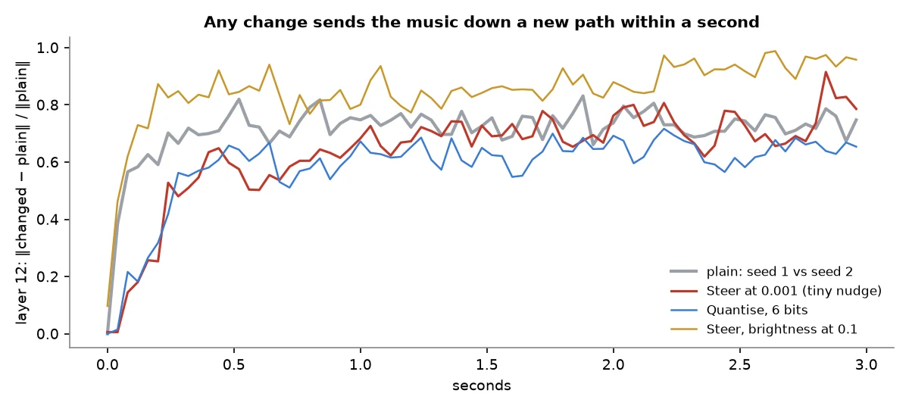
ZoomFor listening, this means a pair of clips mostly lets one hear the path change. Rated as pairs on seed 1, and not blind, the nudge itself was heard as a strong difference. Effect size is therefore judged three ways:
- The edit’s own size, where it acts.
- The stream at the first frame the unit acts. Up to that frame everything is identical to the plain model.
- The sound across seeds. The question is consistency of direction, which a re-rolled path does not have, not the size of a single difference.
What reaches the sound
Where each change enters. At the first frame each unit acts, the layers before its placement are identical to the plain model (0). The change appears at the placement and carries through to layer 12. Neuron and Abliterate act inside every block, so their change starts at layer 1.
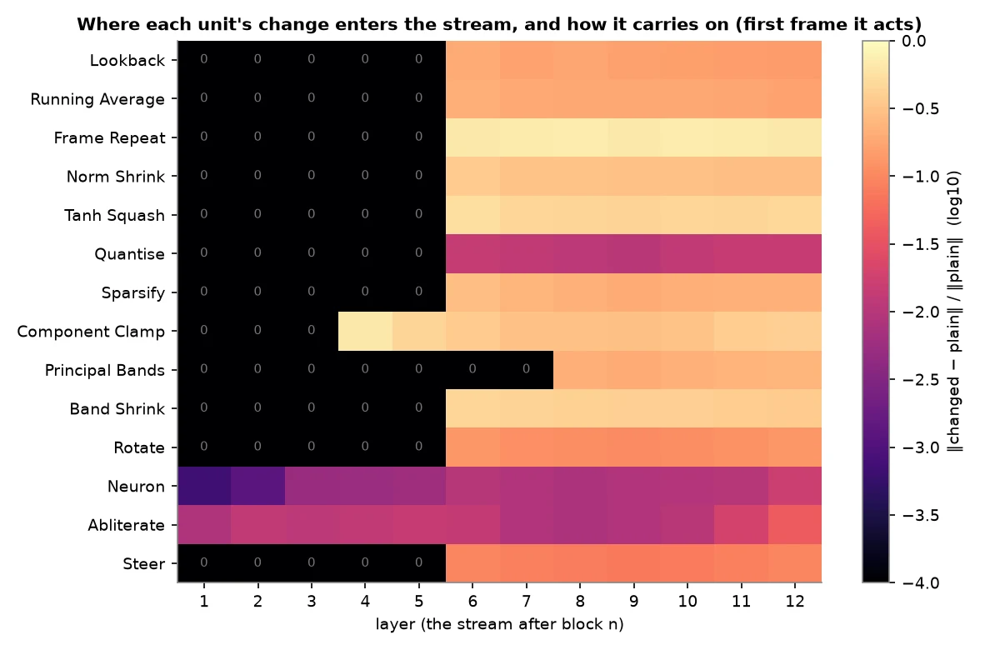
ZoomHow big each edit is. The median ‖after − before‖ / ‖before‖ over every recorded call on seeds 1–3. What “before” is depends on the unit: - for stream units, the stream at their layer; - for Neuron, block 0’s MLP hidden vector; - for Abliterate, block 0 attention’s output.
The last two are not comparable with the rest.
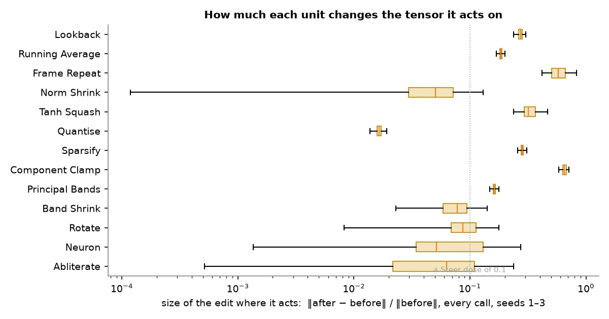
ZoomWhat reaches the sound. 20 seeds × 6 s against the same seed. Ticks are medians, and the pink band runs from 0 to the nudge’s median change of shape.
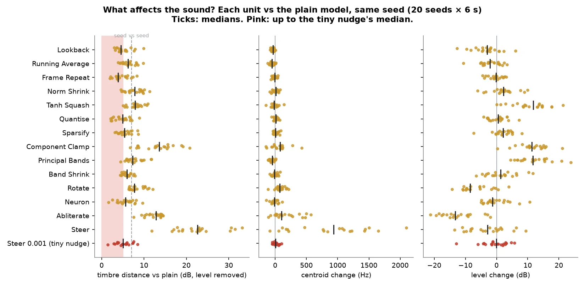
Zoom| Unit | Acts at | Edit (median) | Centroid | Level | Shape shift | Consistent after correction |
|---|---|---|---|---|---|---|
| Lookback | layer 6 | 27% | -37 Hz, 1/20 up ✓ | -3.2 dB, 4/20 up ✓ | 2.7 dB ✓ | darker, quieter, a consistent change of spectral shape |
| Running Average | layer 6 | 19% | -47 Hz, 3/20 up ✓ | -1.9 dB, 7/20 up ✓ | 3.6 dB ✓ | darker, quieter, a consistent change of spectral shape |
| Frame Repeat | layer 6 | 58% | -12 Hz, 7/20 up | -0.3 dB, 8/20 up | 1.0 dB | none detected |
| Norm Shrink | layer 6 | 5% | +6 Hz, 12/20 up | +2.1 dB, 16/20 up ✓ | 3.6 dB ✓ | louder, a consistent change of spectral shape |
| Tanh Squash | layer 6 | 32% | -16 Hz, 6/20 up | +10.8 dB, 20/20 up ✓ | 3.9 dB ✓ | louder, a consistent change of spectral shape |
| Quantise | layer 6 | 2% | +7 Hz, 12/20 up | +0.2 dB, 11/20 up | 1.2 dB | none detected |
| Sparsify | layer 6 | 28% | +9 Hz, 10/20 up | +2.1 dB, 16/20 up ✓ | 1.5 dB | louder |
| Component Clamp | layer 4 | 65% | +65 Hz, 14/20 up ✓ | +11.4 dB, 20/20 up ✓ | 10.7 dB ✓ | brighter, louder, a consistent change of spectral shape |
| Principal Bands | layer 8 | 16% | -55 Hz, 2/20 up ✓ | +12.1 dB, 20/20 up ✓ | 3.6 dB ✓ | darker, louder, a consistent change of spectral shape |
| Band Shrink | layer 6 | 8% | -5 Hz, 8/20 up | +1.5 dB, 11/20 up | 1.5 dB | none detected |
| Rotate | layer 6 | 9% | +78 Hz, 18/20 up ✓ | -6.5 dB, 2/20 up ✓ | 4.7 dB ✓ | brighter, quieter, a consistent change of spectral shape |
| Neuron | block all | 5%ᵃ | -13 Hz, 6/20 up | -0.1 dB, 7/20 up | 0.7 dB | none detected |
| Abliterate | block all | 6%ᵃ | +178 Hz, 17/20 up ✓ | -12.4 dB, 0/20 up ✓ | 9.4 dB ✓ | brighter, quieter, a consistent change of spectral shape |
| Steer | layer 6 | dose 0.1 | +863 Hz, 19/20 up ✓ | -3.1 dB, 7/20 up | 19.8 dB ✓ | brighter, a consistent change of spectral shape |
| Steer 0.001 (control) | layer 6 | dose 0.001 | +11 Hz, 11/20 up | -0.6 dB, 10/20 up | 1.6 dB | control |
ᵃ Neuron’s edit is of block 0’s MLP hidden vector and Abliterate’s of block 0 attention’s output (the first hook each frame), not of the stream. ✓: the shift survives Benjamini–Hochberg correction at 5% across 51 tests (two-sided sign-flip permutation tests over 20 seeds). Shape shift: the RMS over the 48 bands of the mean, across seeds, of the level-free long-term spectrum difference; it is large when the spectrum moves the same way on many seeds.
Unit by unit
Each entry covers: - the claim, from the VAU manifest; - the code that ran; - where the instrument applies it; - what the recorded tensors show; - what reaches the sound.
Each unit was tested at the line its card had at 0.2.8, given in the entry; six of those defaults have changed since (see Shipped presets and new defaults). Each entry opens to show its code and figures. The Model layers page has each unit’s card and its sweep to listen to.
Where the edits are applied
All stream units go through Hooks._wrap in mrt2_proc.py, which wraps each of the twelve transformer blocks. In the code the blocks are numbered from 0, and “layer l” is the stream after block l − 1. After a block runs, the Steer adds its sum (at layer 6, so after block 5 in the code’s numbering), and then the edits placed at that layer run on the frame being written:
# backend/abliterator/mrt2_proc.py, Hooks._wrap (lines 228-236)
y, st2, emits = orig(x, st, *a, **k)
if i + 1 == self.layer:
v = self.vec
if v is not None:
y = y.apply_values(lambda h: h + mx.linalg.norm(h.astype(mx.float32), axis=-1, keepdims=True).astype(h.dtype)
* v.astype(h.dtype))
edits = self.edits.get(i + 1)
if edits:
y = y.apply_values(lambda h: self._bridge(h, edits))How the edits run: - Torch units cross to the CPU in Hooks._bridge. The stream is copied out of MLX, passed through each unit’s edit(h, pos), with pos the frame number, and copied back. - Neuron, Quantise and Abliterate run as MLX versions (mlxunits.py). - Inside the blocks: Abliterate and Neuron act through Hooks._wrap_part. Abliterate works on what self-attention’s and the MLP’s post-norms write (att[4], mlp[5]). Neuron works on the MLP down-projection’s input, the 4,096 hidden units (mlp[3]). - Not reachable by any unit: each block has a third branch, a second attention layer (b.layers[1]), that also writes into the stream.
Lookbackdarker, quieter, a consistent change of spectral shape
Claims. Adds the stream from some positions back: an echo, with feedback. Line: delay layer=6 time=4 feedback=0.3 mix=0.2.
Code that ran.
# vau/units/delay.py, line 26
def delay_edit(time: int, feedback: float, mix: float, line: Dict[int, torch.Tensor]):
def edit(h, pos):
x = h.float()
out = x.clone()
for j, p in enumerate(pos.tolist()):
src = line.get(p - time) if p - time >= 1 else None
if p >= 1:
line[p] = (x[0, j] + feedback * src) if src is not None else x[0, j].clone()
if src is not None:
out[0, j] = x[0, j] + mix * src
return out.to(h.dtype)
return editOn the recorded tensors. From frame 5 it adds a fifth (mix 0.2) of the delay line from four frames back; the line is the stream there plus 0.3 of the line four frames before that. It changed the stream on 70 of 75 frames. The Mix knob runs only from 0 to 0.2, because a mix of 0.4 sent the model toward silence in the site’s sweep. Size of the edit: median 27% of the stream at that layer (90th percentile 29%), seeds 1–3.
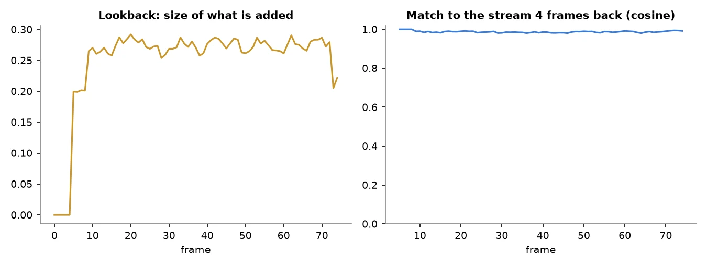
ZoomWhat reaches the sound (20 seeds × 6 s, against the same seed): centroid -37 Hz on average, up on 1 of 20 seeds (p = 0.000, q = 0.000); level -3.2 dB on average, up on 4 of 20 seeds (p = 0.003, q = 0.005); mean level-free spectrum shift 2.7 dB (RMS over bands of the mean across seeds (p = 0.000, q = 0.000). On 10 seeds more than 5% of frames fell near silence (at most 48%). The quieter result rests on the seeds where the take drops toward silence: without the 10 seeds with more than 5% near-silent frames, the level shift is not detected (p = 0.24), while the darkening still is (p = 0.002).
Verdict. Consistent across seeds after correction: darker, quieter, a consistent change of spectral shape.
Running Averagedarker, quieter, a consistent change of spectral shape
Claims. Adds a decaying average of the earlier positions. Line: reverb layer=6 decay=0.8 mix=0.2.
Code that ran.
# vau/units/reverb.py, line 24
def reverb_edit(decay: float, mix: float, tail: Dict[int, torch.Tensor]):
def edit(h, pos):
x = h.float()
out = x.clone()
for j, p in enumerate(pos.tolist()):
prev = tail.get(p - 1) if p >= 2 else None
if p >= 1:
tail[p] = (decay * prev + (1 - decay) * x[0, j]) if prev is not None else x[0, j].clone()
if prev is not None:
out[0, j] = x[0, j] + mix * prev
return out.to(h.dtype)
return editOn the recorded tensors. From frame 2 it adds a fifth of a decaying average of the earlier frames (decay 0.8). It changed the stream on 73 of 75 frames. Mix is capped at 0.2 for the same reason as Lookback’s. Size of the edit: median 19% of the stream at that layer (90th percentile 20%), seeds 1–3.
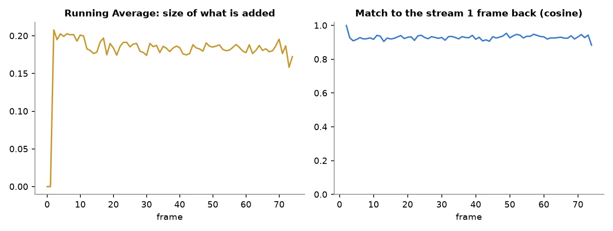
ZoomWhat reaches the sound (20 seeds × 6 s, against the same seed): centroid -47 Hz on average, up on 3 of 20 seeds (p = 0.000, q = 0.000); level -1.9 dB on average, up on 7 of 20 seeds (p = 0.016, q = 0.025); mean level-free spectrum shift 3.6 dB (RMS over bands of the mean across seeds (p = 0.000, q = 0.000). On 4 seeds more than 5% of frames fell near silence (at most 22%). The quieter result rests on the seeds where the take drops toward silence: without those 4 seeds the level shift is not detected (p = 0.18), while the darkening still is (p = 0.0003).
Verdict. Consistent across seeds after correction: darker, quieter, a consistent change of spectral shape.
Frame Repeatno consistent shift at the 0.2.8 default
Claims. In every run of positions, replays the stream of the few positions before over the last few: a stutter. Line: beatrepeat layer=6 interval=8 length=2 mix=1.
Code that ran.
# vau/units/beatrepeat.py, line 27
def beatrepeat_edit(interval: int, length: int, mix: float, kept: Dict[int, torch.Tensor]):
length = min(length, interval - 1)
def edit(h, pos):
x = h.float()
out = x.clone()
for j, p in enumerate(pos.tolist()):
if p < 1:
continue
kept[p] = x[0, j].clone()
if (p - 1) % interval >= interval - length and (p - length) in kept and p - length >= 1:
out[0, j] = (1 - mix) * x[0, j] + mix * kept[p - length]
return out.to(h.dtype)
return editOn the recorded tensors. On frames 7 and 8 of every eight (counting from 1) it replaces the stream with the stream two frames back: 18 of 75 frames, 80 ms in every 320 ms. The size of the edit below is over those frames only. Size of the edit: median 58% of the stream at that layer (90th percentile 70%), seeds 1–3.
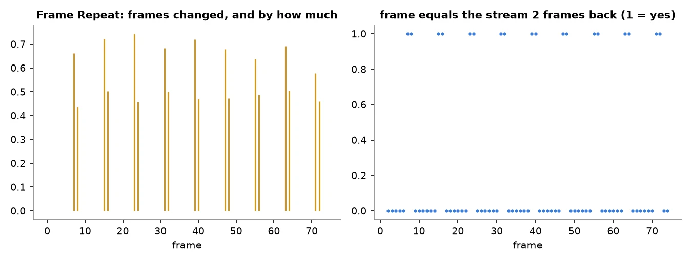
ZoomWhat reaches the sound (20 seeds × 6 s, against the same seed): centroid -12 Hz on average, up on 7 of 20 seeds (p = 0.097, q = 0.137); level -0.3 dB on average, up on 8 of 20 seeds (p = 0.484, q = 0.549); mean level-free spectrum shift 1.0 dB (RMS over bands of the mean across seeds (p = 0.563, q = 0.611).
Verdict. No consistent shift detected on 20 seeds at the default setting (no test survives correction).
Norm Shrinklouder, a consistent change of spectral shape
Claims. Above a threshold, reduces the stream’s size at each position by a ratio. Line: compressor layer=6 ratio=4 makeup=1 thresh=1.
Code that ran.
# vau/units/compressor.py, line 24
def compressor_edit(threshold: float, ratio: float, makeup: float):
def edit(h, pos):
x = h.float()
n = x.norm(dim=-1, keepdim=True).clamp_min(1e-9)
target = torch.where(n > threshold, threshold + (n - threshold) / ratio, n)
return (x * (target / n) * makeup).to(h.dtype)
return editOn the recorded tensors. The threshold is the stream’s typical size at layer 6 over the reference set (54.3). The share of frames over it was 100%, 99% and 77% on seeds 1–3, and the stream was shrunk to a median of 94%, 94% and 99% of its size. Size of the edit: median 5% of the stream at that layer (90th percentile 10%), seeds 1–3.
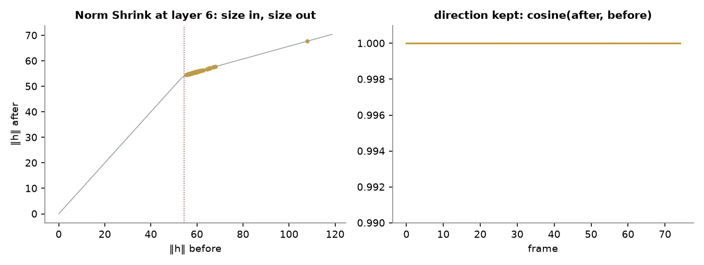
ZoomWhat reaches the sound (20 seeds × 6 s, against the same seed): centroid +6 Hz on average, up on 12 of 20 seeds (p = 0.542, q = 0.601); level +2.1 dB on average, up on 16 of 20 seeds (p = 0.029, q = 0.045); mean level-free spectrum shift 3.6 dB (RMS over bands of the mean across seeds (p = 0.000, q = 0.000).
Verdict. Consistent across seeds after correction: louder, a consistent change of spectral shape.
Tanh Squashlouder, a consistent change of spectral shape
Claims. Soft-clips each dimension of the stream, harder as the drive rises. Line: saturator layer=6 mix=1 drive=1.
Code that ran.
# vau/units/saturator.py, line 23
def saturator_edit(level: torch.Tensor, mix: float):
def edit(h, pos):
x = h.float()
wet = level * torch.tanh(x / level)
return ((1 - mix) * x + mix * wet).to(h.dtype)
return editOn the recorded tensors. It changes every coordinate, but 91–93% of the edit lies on the 2–3% of coordinates beyond three standard deviations. Size of the edit: median 32% of the stream at that layer (90th percentile 41%), seeds 1–3.
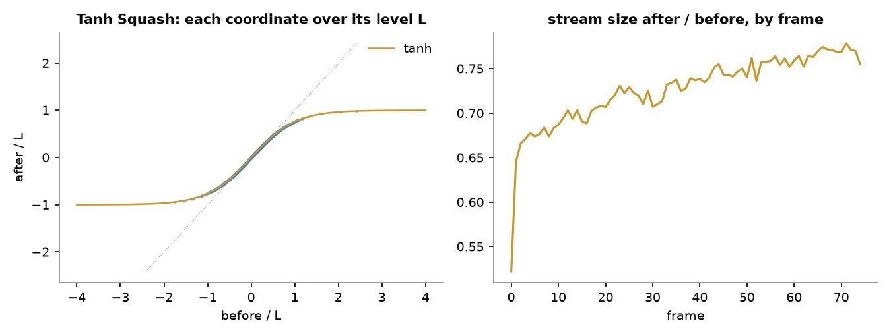
ZoomWhat reaches the sound (20 seeds × 6 s, against the same seed): centroid -16 Hz on average, up on 6 of 20 seeds (p = 0.241, q = 0.299); level +10.8 dB on average, up on 20 of 20 seeds (p = 0.000, q = 0.000); mean level-free spectrum shift 3.9 dB (RMS over bands of the mean across seeds (p = 0.000, q = 0.000).
Verdict. Consistent across seeds after correction: louder, a consistent change of spectral shape.
Quantiseno consistent shift at the 0.2.8 default
Claims. Quantises the stream to few levels, or holds it over several positions. Line: erosion layer=6 bits=6 hold=1.
Code that ran. Abliterator’s MLX version, erosion_fn in mlxunits.py, tested in its own test suite against VAU’s torch unit; the VAU code was not executed in these runs.
# backend/abliterator/mlxunits.py, line 98
def erosion_fn(step: Optional[np.ndarray], hold: int, held: Dict[int, Any], f: float, keepnorm: bool) -> Callable:
st = None
def edit(h, frame: int):
nonlocal st
mx = _mx()
if frame < 1 or (step is None and hold <= 1):
return h
x = h.astype(mx.float32)
if step is not None:
if st is None:
st = mx.array(step.astype(np.float32))
x = mx.round(x / st) * st
if hold > 1:
first = 1 + ((frame - 1) // hold) * hold
if frame == first:
held.clear()
held[first] = x
elif first in held:
x = held[first]
return _mix(h.astype(mx.float32), x, f, keepnorm).astype(h.dtype)
return mlx_fn(edit)On the recorded tensors. With 6 bits the step is about a tenth of a typical coordinate. It changes every frame from frame 1; frame 0 is skipped (Finding 3). Size of the edit: median 2% of the stream at that layer (90th percentile 2%), seeds 1–3.
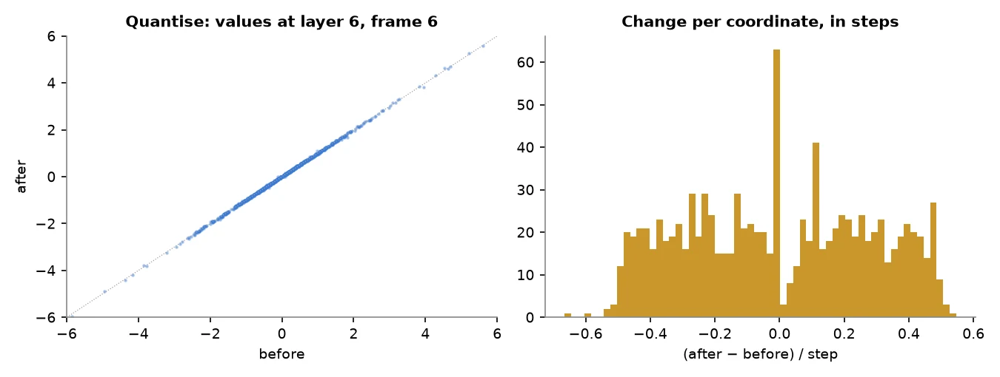
ZoomWhat reaches the sound (20 seeds × 6 s, against the same seed): centroid +7 Hz on average, up on 12 of 20 seeds (p = 0.280, q = 0.340); level +0.2 dB on average, up on 11 of 20 seeds (p = 0.729, q = 0.759); mean level-free spectrum shift 1.2 dB (RMS over bands of the mean across seeds (p = 0.227, q = 0.289).
Verdict. No consistent shift detected on 20 seeds at the default setting (no test survives correction).
Sparsifylouder
Claims. Keeps only each position’s largest components and zeroes the rest, making the stream sparse. Line: gate layer=6 sink=0 keep=0.25.
Code that ran.
# vau/units/gate.py, line 26
def gate_edit(keep: float, sink: bool):
def edit(h, pos):
if keep >= 1.0:
return h
x = h.float()
k = max(1, math.ceil(keep * x.shape[-1]))
idx = x.abs().topk(k, dim=-1).indices
out = torch.zeros_like(x).scatter(-1, idx, x.gather(-1, idx))
if not sink:
out = torch.where(pos.view(1, -1, 1) == 0, x, out)
return out.to(h.dtype)
return editOn the recorded tensors. From frame 1 it keeps exactly the 256 largest of 1,024 components, which hold 96% of the stream’s size. Size of the edit: median 28% of the stream at that layer (90th percentile 30%), seeds 1–3.
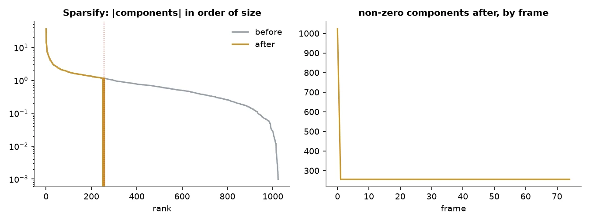
ZoomWhat reaches the sound (20 seeds × 6 s, against the same seed): centroid +9 Hz on average, up on 10 of 20 seeds (p = 0.308, q = 0.365); level +2.1 dB on average, up on 16 of 20 seeds (p = 0.009, q = 0.014); mean level-free spectrum shift 1.5 dB (RMS over bands of the mean across seeds (p = 0.163, q = 0.220).
Verdict. Consistent across seeds after correction: louder.
Component Clampbrighter, louder, a consistent change of spectral shape
Claims. Clamps each position’s largest components at a ceiling set by a quantile of their sizes. Line: limiter layer=4 sink=0 ceiling=0.99.
Code that ran.
# vau/units/limiter.py, line 30
def limiter_edit(q: float, sink: bool):
def edit(h, pos):
if q >= 1.0:
return h
x = h.float()
lim = torch.quantile(x.abs(), q, dim=-1, keepdim=True)
out = torch.maximum(torch.minimum(x, lim), -lim)
if not sink:
out = torch.where(pos.view(1, -1, 1) == 0, x, out)
return out.to(h.dtype)
return editOn the recorded tensors. At layer 4 the largest 1% of coordinates hold 82–83% of the stream’s size; clamping them at the 99th percentile removes 36–38% of the stream’s size each frame, the largest edit of any unit. Size of the edit: median 65% of the stream at that layer (90th percentile 69%), seeds 1–3.
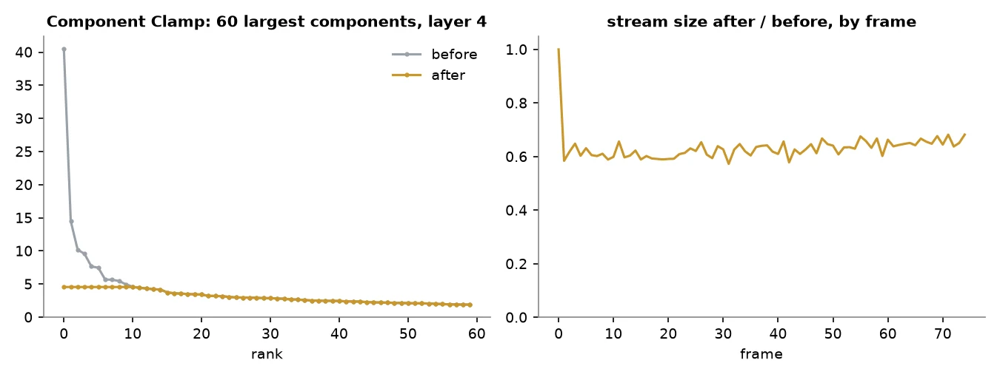
ZoomWhat reaches the sound (20 seeds × 6 s, against the same seed): centroid +65 Hz on average, up on 14 of 20 seeds (p = 0.030, q = 0.045); level +11.4 dB on average, up on 20 of 20 seeds (p = 0.000, q = 0.000); mean level-free spectrum shift 10.7 dB (RMS over bands of the mean across seeds (p = 0.000, q = 0.000).
Verdict. Consistent across seeds after correction: brighter, louder, a consistent change of spectral shape.
Principal Bandsdarker, louder, a consistent change of spectral shape
Claims. Scales three bands of the stream’s principal directions: low, mid, high. Line: eq layer=8 low=1.3 mid=1 high=0.7.
Code that ran.
# vau/units/eq.py, line 28
def eq_edit(mean: torch.Tensor, bands: List[torch.Tensor], gains: List[float]):
def edit(h, pos):
x = h.float()
xc = x - mean
for v, g in zip(bands, gains):
if g != 1.0:
x = x + (g - 1.0) * ((xc @ v.T) @ v)
return x.to(h.dtype)
return editOn the recorded tensors. The change lies in the low band (the first 8 principal directions, raised 30%) and the high band (65 onward, cut 30%) of layer 8’s principal directions, with none in the middle band. Size of the edit: median 16% of the stream at that layer (90th percentile 17%), seeds 1–3.
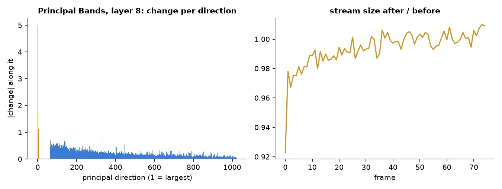
ZoomWhat reaches the sound (20 seeds × 6 s, against the same seed): centroid -55 Hz on average, up on 2 of 20 seeds (p = 0.000, q = 0.000); level +12.1 dB on average, up on 20 of 20 seeds (p = 0.000, q = 0.000); mean level-free spectrum shift 3.6 dB (RMS over bands of the mean across seeds (p = 0.000, q = 0.001).
Verdict. Consistent across seeds after correction: darker, louder, a consistent change of spectral shape.
Band Shrinkno consistent shift at the 0.2.8 default
Claims. Compresses the stream separately in three bands of its principal directions: low, mid, high. Line: multiband layer=6 ratio=4 band=all thresh=1.
Code that ran.
# vau/units/multiband.py, line 29
def multiband_edit(mean: torch.Tensor, bands: List[torch.Tensor], limits: List[float], ratio: float, which: List[int]):
def edit(h, pos):
x = h.float()
xc = x - mean
out = x.clone()
for b in which:
v, lim = bands[b], limits[b]
y = xc @ v.T # the band's coordinates
n = y.norm(dim=-1, keepdim=True).clamp_min(1e-9)
target = torch.where(n > lim, lim + (n - lim) / ratio, n)
out = out + ((y * (target / n - 1)) @ v)
return out.to(h.dtype)
return editOn the recorded tensors. The high band is over its limit on every frame; the middle band on 55%, 49% and 36% of frames on seeds 1–3, the low band on 13%, 4% and 4%. Size of the edit: median 8% of the stream at that layer (90th percentile 12%), seeds 1–3.
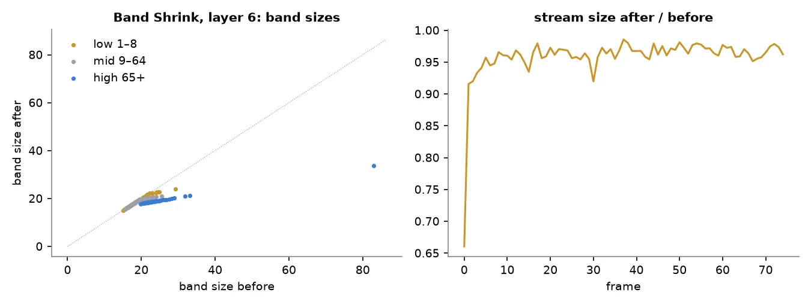
ZoomWhat reaches the sound (20 seeds × 6 s, against the same seed): centroid -5 Hz on average, up on 8 of 20 seeds (p = 0.597, q = 0.634); level +1.5 dB on average, up on 11 of 20 seeds (p = 0.180, q = 0.235); mean level-free spectrum shift 1.5 dB (RMS over bands of the mean across seeds (p = 0.164, q = 0.220).
Verdict. No consistent shift detected on 20 seeds at the default setting (no test survives correction).
Rotatebrighter, quieter, a consistent change of spectral shape
Claims. Rotates the stream in the plane of two directions. Line: shifter layer=6 dir=brightness dir2=pulse angle=45.
Code that ran.
# vau/units/shifter.py, line 25
def shifter_edit(e1: torch.Tensor, e2: torch.Tensor, angle: float):
c, s = math.cos(math.radians(angle)), math.sin(math.radians(angle))
def edit(h, pos):
x = h.float()
a, b = (x * e1).sum(-1, keepdim=True), (x * e2).sum(-1, keepdim=True)
return (x + (a * c - b * s - a) * e1 + (a * s + b * c - b) * e2).to(h.dtype)
return editOn the recorded tensors. The stream’s size is kept exactly; its part in the plane of Brightness and Pulse, 10–13% of its size, is turned 45°. Size of the edit: median 9% of the stream at that layer (90th percentile 14%), seeds 1–3.
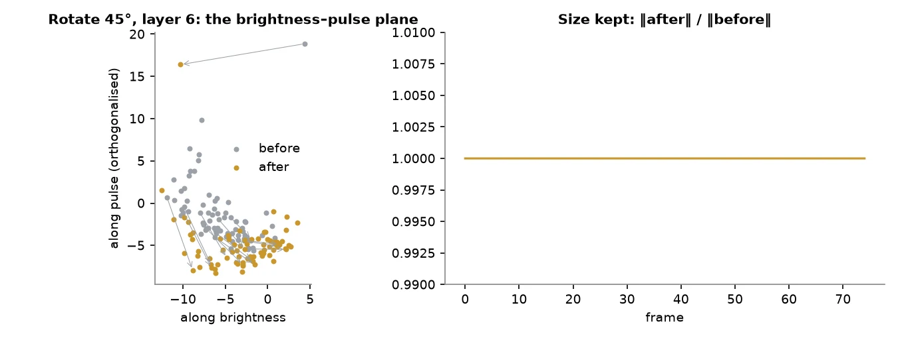
ZoomWhat reaches the sound (20 seeds × 6 s, against the same seed): centroid +78 Hz on average, up on 18 of 20 seeds (p = 0.000, q = 0.000); level -6.5 dB on average, up on 2 of 20 seeds (p = 0.000, q = 0.000); mean level-free spectrum shift 4.7 dB (RMS over bands of the mean across seeds (p = 0.000, q = 0.000). On 2 seeds more than 5% of frames fell near silence (at most 6%).
Verdict. Consistent across seeds after correction: brighter, quieter, a consistent change of spectral shape.
Neuronno consistent shift at the 0.2.8 default
Claims. Scales, adds to, sets, zeroes, flips or clamps single MLP neurons in one block. Line: neuron block=all n=373 op=scale value=6.
Code that ran. Abliterator’s MLX version, neuron_fn in mlxunits.py, tested in its own test suite against VAU’s torch unit; the VAU code was not executed in these runs.
# backend/abliterator/mlxunits.py, line 66
def neuron_fn(ns: List[int], op: str, value: float, f: float, keepnorm: bool) -> Callable:
masks: Dict[int, Any] = {}
def edit(h):
mx = _mx()
shape, flat = h.shape, h.reshape(-1).astype(mx.float32)
n = flat.shape[0]
if n not in masks:
m = np.zeros(n, np.float32)
m[[i for i in ns if i < n]] = 1.0
masks[n] = mx.array(m)
m = masks[n]
if op == "scale":
a = flat * (1.0 + m * (value - 1.0))
elif op == "add":
a = flat + m * value
elif op == "set":
a = flat * (1.0 - m) + m * value
elif op == "zero":
a = flat * (1.0 - m)
elif op == "flip":
a = flat * (1.0 - 2.0 * m)
else: # clamp
v = abs(value)
a = mx.where(m > 0, mx.clip(flat, -v, v), flat)
out = _mix(flat.reshape(1, 1, -1), a.reshape(1, 1, -1), f, keepnorm)
return out.reshape(shape).astype(h.dtype)
return mlx_fn(edit)On the recorded tensors. Neuron 373 of the 4,096 MLP hidden units is multiplied by 6 in every block and no other hidden unit changes: on all 1,440 calls (12 blocks × 40 frames × 3 seeds) the recorded output equals the prediction exactly after rounding. Size of the edit: median 5% of block 0’s MLP hidden vector (90th percentile 26%), seeds 1–3.
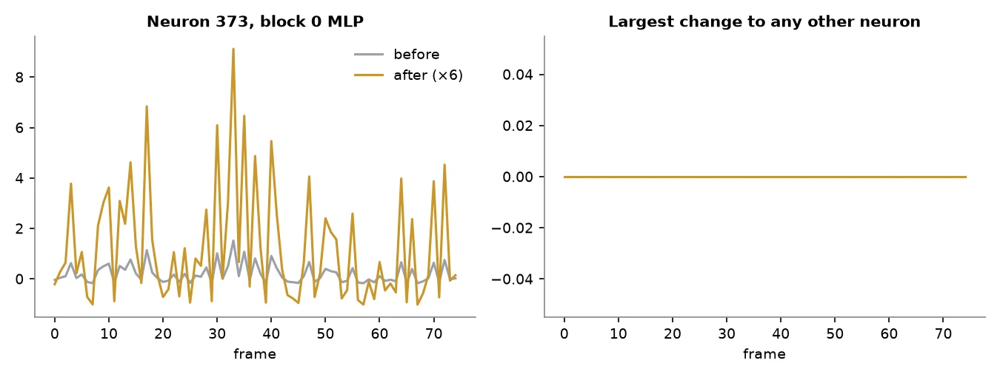
ZoomWhat reaches the sound (20 seeds × 6 s, against the same seed): centroid -13 Hz on average, up on 6 of 20 seeds (p = 0.318, q = 0.368); level -0.1 dB on average, up on 7 of 20 seeds (p = 0.909, q = 0.927); mean level-free spectrum shift 0.7 dB (RMS over bands of the mean across seeds (p = 0.979, q = 0.979).
Verdict. No consistent shift detected on 20 seeds at the default setting (no test survives correction).
Abliteratebrighter, quieter, a consistent change of spectral shape
Claims. Removes a direction from what attention and MLPs write, with a strength that peaks at one block and tapers. Line: abliterate block=all dir=brightness shape=flat peak=0.7 width=0.4 edge=0.3 share=0.5 projected=1 size=0 bias=1 strength=1.
Code that ran. Abliterator’s MLX version, abliterate_fn in mlxunits.py, tested in its own test suite against VAU’s torch unit; the VAU code was not executed in these runs.
# backend/abliterator/mlxunits.py, line 125
def abliterate_fn(v: np.ndarray, s: float, scale: Optional[np.ndarray]) -> Callable:
vv, sc = None, None
def edit(h):
nonlocal vv, sc
mx = _mx()
if vv is None:
vv = mx.array(v.astype(np.float32))
sc = mx.array(scale.astype(np.float32)) if scale is not None else None
x = h.astype(mx.float32)
x = x - s * mx.sum(x * vv, axis=-1, keepdims=True) * vv
if sc is not None:
x = x * sc
return x.astype(h.dtype)
return mlx_fn(edit)On the recorded tensors. In every block it removes the part of what self-attention writes along Brightness (strength 1), and half the part of what the MLP writes (MLP share 0.5), with Brightness first made orthogonal to the stream’s mean at that layer. All 2,880 calls (24 a frame × 40 frames × 3 seeds) match the formula (worst error 3×10⁻⁴). In block 0’s attention output the part along the direction fell from 5–8% of the output to 0.02%. At strength 2 the attention part is turned round, not removed. Size of the edit: median 6% of block 0 attention’s output (90th percentile 16%), seeds 1–3.
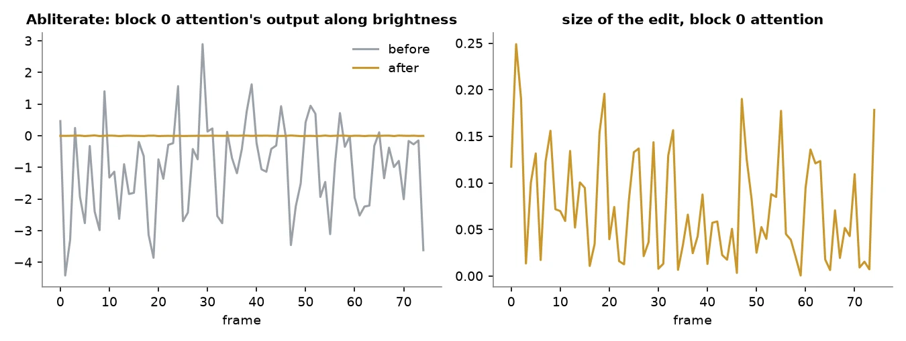
ZoomWhat reaches the sound (20 seeds × 6 s, against the same seed): centroid +178 Hz on average, up on 17 of 20 seeds (p = 0.001, q = 0.001); level -12.4 dB on average, up on 0 of 20 seeds (p = 0.000, q = 0.000); mean level-free spectrum shift 9.4 dB (RMS over bands of the mean across seeds (p = 0.000, q = 0.000). On 12 seeds more than 5% of frames fell near silence (at most 59%).
Verdict. Consistent across seeds after correction: brighter, quieter, a consistent change of spectral shape.
Steerbrighter, a consistent change of spectral shape
Claims. Adds a dose of each direction to the stream at layer 6, scaled by the stream’s own size: h ← h + ‖h‖ · Σ dose_i · v_i, with each v_i of unit length. Code: the Hooks._wrap lines above.
On the recorded tensors. At frame 0, layers 1–5 are identical to the plain model’s, and layer 6 has had 9.96% of its size added: doses of 0.1 and 0.03 along two directions about 100° apart at this layer (cosine −0.17), which sum to 0.0995. This matches the formula to within 1.4% of what was added, the stream’s bfloat16 rounding. A dose of 0.001 sits at that rounding’s scale: 94% of its size survives, but it lands on only 166 of 1,024 coordinates, at a cosine of 0.84 with the intended direction.
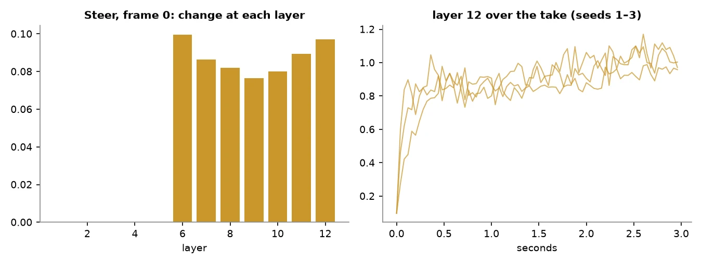
ZoomWhat reaches the sound (20 seeds × 6 s, against the same seed): centroid +863 Hz on average, up on 19 of 20 seeds (p = 0.000, q = 0.000); level -3.1 dB on average, up on 7 of 20 seeds (p = 0.043, q = 0.062); mean level-free spectrum shift 19.8 dB (RMS over bands of the mean across seeds (p = 0.000, q = 0.000). On 3 seeds more than 5% of frames fell near silence (at most 17%).
Verdict. Consistent across seeds after correction: brighter, a consistent change of spectral shape.
Time-based effects
Lookback, Running Average and Frame Repeat claim to act in time, and so does Quantise when its Hold is above 1. Lookback mixes in the stream from an earlier frame, Running Average mixes in a decaying average of earlier frames, Frame Repeat replays an earlier frame in place of the current one, and Quantise with a hold keeps one frame’s values for several frames.
Spectral measures and frame order
The three sound measures above (centroid, level and shape) are all taken from the long-term spectrum, the power spectrum averaged over the whole take. An echo adds earlier frames to later ones, and a hold puts one frame where the next would have been. On a drone, where one frame’s spectrum is much like the next, either can leave the average over 6 s close to what it was, so the order of frames, which is what these units change, may not show in those measures at all.
Frame-to-frame similarity
temporal.py measures the order of frames directly. - Spectra by frame. One spectrum per 40 ms model frame: a Hann window of 80 ms moved on by 1,920 samples (40 ms at 48 kHz), so spectrum t is centred on the boundary between frames t and t + 1; log magnitude from 40 Hz to 12 kHz, with each frequency bin’s mean over the take removed. At lag 1 two spectra share half their samples; from lag 2 the windows do not overlap. The overlap is the same for the plain model and the unit. - Similarity at lag L. The mean, over the take, of the cosine between frame t’s spectrum and frame t − L’s. It is higher when each frame is more like the one L frames before it. - Against the plain model. For each seed, the unit’s similarity minus the plain model’s on the same seed, at every lag from 1 to 16 frames (40 to 640 ms). - Seeds and test. Seeds 1–10, 150 frames (6 s) each, the Warm drone. A two-sided sign-flip test over all 1,024 sign patterns, so the smallest possible p is 0.002. The p-values in the tables are not corrected across lags or cases, and neighbouring lags are not independent of each other. Under the Benjamini–Hochberg correction used elsewhere in this review, applied across this section’s 147 tests (nine cases × 16 lags and three replaced-frame tests), none survives at 5%: with ten seeds the smallest p is 0.002. Corrected within each case over its 16 lags, Lookback at layer 6 survives at lags 1–9 and Quantise with hold 8 at lags 3–4; Running Average, Lookback at layer 12 and the Frame Repeat results do not. - Frame Repeat. It replaces only some frames (the last Length of every Interval), so it was also measured on those frames alone, at a lag equal to its Length. The frames are selected by their position in the model; whether the audio of a position lags it by a frame in the codec was not checked, and shifting the selection one frame later raised the rise for two presets on four held-out seeds (see below), so the replaced-frame figures are approximate.
An echo or a hold should raise the similarity at its lag. A change that only re-rolls the sampled path should leave it near the nudge’s figures.
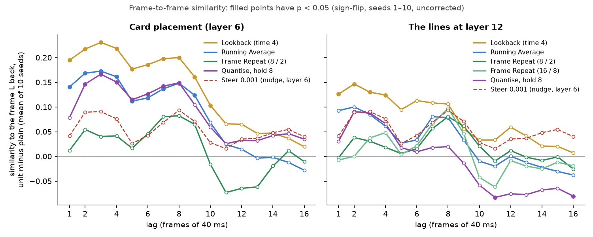
ZoomFilled points have p < 0.05, uncorrected. The nudge in both panels is at layer 6. The figure shows similarity across the whole take; Frame Repeat’s figures on the frames it replaces are in the second table below.
| Case | Lag 1 | Lag 4 | Largest rise | Lags with p < 0.05 |
|---|---|---|---|---|
| Steer 0.001 (control) | +0.042 (p = 0.375) | +0.076 (p = 0.297) | +0.094 at lag 8 (p = 0.275) | none (smallest p 0.107, lag 2) |
| Lookback, card default (layer 6, time 4) | +0.195 (p = 0.002) | +0.219 (p = 0.004) | +0.231 at lag 3 (p = 0.004) | 1–10 |
| Lookback, the same at layer 12 | +0.126 (p = 0.012) | +0.124 (p = 0.037) | +0.147 at lag 2 (p = 0.029) | 1–4 |
| Running Average, card default (layer 6) | +0.141 (p = 0.004) | +0.161 (p = 0.014) | +0.173 at lag 3 (p = 0.008) | 1–9 |
| Running Average, the same at layer 12 | +0.093 (p = 0.105) | +0.061 (p = 0.178) | +0.100 at lag 2 (p = 0.061) | none |
| Frame Repeat, card default (layer 6, interval 8, length 2) | +0.012 (p = 0.723) | +0.042 (p = 0.188) | +0.082 at lag 8 (p = 0.262) | none |
| Frame Repeat, the same at layer 12 | −0.003 (p = 0.939) | +0.019 (p = 0.455) | +0.081 at lag 8 (p = 0.053) | none |
| Frame Repeat, layer 12, interval 16, length 8 | −0.007 (p = 0.842) | +0.048 (p = 0.160) | +0.098 at lag 8 (p = 0.111) | none |
| Quantise, 16 bits, hold 8 (layer 6) | +0.079 (p = 0.152) | +0.151 (p = 0.006) | +0.167 at lag 3 (p = 0.004) | 2–8 |
| Quantise, 16 bits, hold 8, at layer 12 | +0.031 (p = 0.297) | +0.067 (p = 0.129) | +0.091 at lag 2 (p = 0.023) | 2–3; lower at 11 (−0.083, p = 0.047) and 16 (−0.080, p = 0.033) |
On the replaced frames alone, at a lag equal to the Length:
| Frame Repeat case | Lag | Rise | p |
|---|---|---|---|
| Card default (layer 6, interval 8, length 2) | 2 | +0.111 | 0.014 |
| The same at layer 12 | 2 | +0.056 | 0.191 |
| Layer 12, interval 16, length 8 | 8 | +0.136 | 0.027 |
- Lookback and Running Average at layer 6 raise the similarity at every lag from 1 to 9 or 10 (up to 400 ms), most at lag 3. Lookback’s rise at its own Time, lag 4, is +0.219. The rise does not peak at lag 4, so the measure may be picking up a general smoothing of frame-to-frame change along with an echo at 160 ms.
- At layer 12 the same lines give smaller rises: Lookback’s clears p < 0.05 at lags 1–4, and Running Average’s at none.
- Frame Repeat at its card default shows no change with p < 0.05 at any lag across the whole take (largest rise +0.082 at lag 8, p = 0.262, about the nudge’s size). On the frames it replaces, the similarity at lag 2 rises by 0.111 (p = 0.014). The replaced frames are a quarter of the take at this setting.
- Quantise with a hold of 8 frames at layer 6 raises the similarity from lag 2 to lag 8. At lag 1 the rise, +0.079, has p = 0.152.
- The nudge is above zero at all sixteen lags, by 0.016 to 0.094, with no p below 0.107. Every case is compared with the same ten plain takes, so part of each unit’s rise may be of the size that any change of path gives, up to about 0.09 on these seeds.
- On the held-out seeds (21–30; see Presets and held-out seeds), with correction: the old Lookback default rose by +0.271 at lag 4 (q = 0.006), the old Running Average default by +0.170 at lag 1 (q = 0.006) and Quantise with hold 8 by +0.099 at lag 1 (q = 0.010). Frame Repeat’s card default rose by +0.088 on its replaced frames (8 of 10 up, q = 0.081), short of correction, and the layer-12 line with interval 16 and length 8 by +0.005 (p = 0.855).
- Quantise at its old default (6 bits, hold 1) holds nothing, so the time measure does not apply to it. On the spectral measures it was not detected on 20 seeds: centroid +7 Hz (12 of 20 up, q = 0.34), level +0.2 dB (q = 0.76), shape 1.2 dB (q = 0.29). In the preset search (six seeds × 4 s) its median timbre distance was 4.0 dB, against the nudge’s 4.7 dB. The instrument’s default for Quantise is now the Bitcrush preset (1 bit, hold 1, layer 6;
HOST_HEARDinunits.py).
Presets and held-out seeds
The search
tune.py, tune2.py and tune3.py measured 163 candidate lines across the thirteen units, and the nudge as a control. - Renders. Each line on seeds 1–6, 100 frames (4 s) each, the Warm drone, through Proc.render with the line as the take’s start. - Measures. Per seed, against the plain model on the same seed: - timbre distance: the RMS over the spectrum’s bands of the level-free difference between the two long-term spectra, in dB; - the change of spectral centroid and of level; - broken (calibrate.broken): clips (more than 0.1% of samples at 0.98 or above), falls silent (more than a quarter of the 40 ms frames below −55 dBFS, or a level 24 dB below the plain model’s), overdriven (RMS above −12 dBFS), or turns to noise (spectral flatness above 0.3 and three times the plain model’s). - Rounds. The first round covered each unit’s range at its card placement and a few others. The second and third moved most of the units with no consistent effect to later layers (mostly 11 and 12), tried Neuron at blocks 0, 9, 10 and 11, Band Shrink at layers 2 and 10, Principal Bands at 8, 10 and 12, Quantise at 10 and Rotate with its two directions swapped, added Keep size versions of the late Lookback and Running Average lines, and gave Neuron neurons chosen from the weights: in a block, those whose output weights point most along (or against) Brightness or Pulse at the layer the block writes into. - Breaks. 19 of the 163 lines, the card defaults among them, broke on at least one of the six seeds. The nudge’s median timbre distance was 4.7 dB.
presets.py first listed the presets, chosen by hand from the lines that broke on none of the six seeds: 80 presets for twelve units, six to eight each. Abliterate keeps its own five presets by strength and was not part of this check.
The held-out check
The presets were chosen on seeds 1–6 and checked on seeds 21–30, which played no part in the choice. A line picked from many candidates because it held on six seeds may have held partly by chance on those six, so figures from the same seeds would tend to overstate how often it holds.
- Renders (
verify_presets.py). Every preset on seeds 21–30, 150 frames (6 s) each, the Warm drone, with the nudge as the control. - Measures. Those of the search, the shape shift of the sound table above, and for the time presets the frame-to-frame similarity at the preset’s own lag, unit minus plain: Lookback at its Time, Running Average at lag 1, Frame Repeat at its Length on the frames it replaces, Quantise with a hold at lag 1. These lags were fixed from each unit’s design before the held-out run, not from the peaks in the time section, where lag 1 was the weakest for Quantise with hold 8 and Lookback peaked at lag 3.
- Tests (
verify_stats.py). Two-sided sign-flip tests over the ten seeds on centroid, level, shape and, for the time presets, similarity. Benjamini–Hochberg correction at 5% across all 265 tests of the 80 presets, the control reported and not counted. - Shipping rule (
presets.py). A preset ships when it broke on none of the ten held-out seeds. A unit’s presets ship when at least five of them hold and all have been checked. A preset does not need any measure to survive correction to ship. - This round and the next. The figures below are for the presets as first chosen (round 1). After this round, the 15 presets that broke at Lookback, Running Average, Component Clamp, Principal Bands, Band Shrink and Neuron were replaced in
presets.pywith new lines: Keep size on for Lookback and Running Average, Component Clamp at layers 10 and 12, Air and Sky with the minor directions up by a quarter, Deep Low with a threshold of 0.5, and Bright Push adding 3. Drive, Back Turn and Late Turn were left as they were. The replacements were chosen after the held-out results and measured on the same seeds 21–30, so for them those seeds are not independent of the choice; their results are under “The replaced presets” below. In the second round’s statistics the replaced lines take the place of the first ones, and the correction runs over that set of 265 tests.
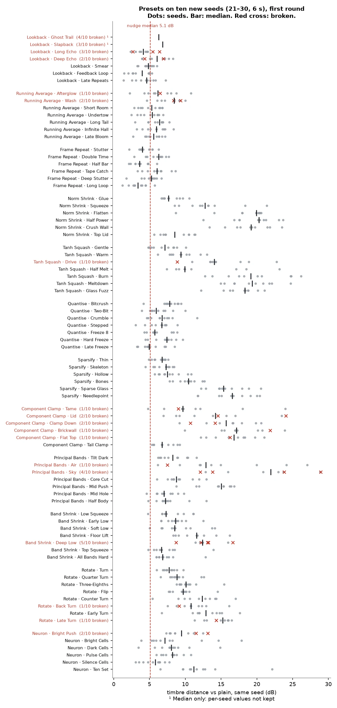
ZoomTimbre distance only; whether a measure moved consistently is in the tables below. The dashed line is the nudge’s median, not a threshold.
Held-out results
- The control. The nudge on seeds 21–30: timbre distance 5.1 dB (median), centroid +20 Hz (6 of 10 up, p = 0.207), level −0.4 dB (4 of 10 up, p = 0.676), shape 2.2 dB (p = 0.139), similarity at lag 1 +0.030 (6 of 10 up, p = 0.43), broken on none. There is no control at other lags or on replaced frames.
- Breaks. Every preset broke on none of the six search seeds. On the held-out seeds, 18 of the 80 broke on at least one. Most of these breaks are silent gaps: more than a quarter of the 40 ms frames below −55 dBFS, which can happen with little loss of level (Long Echo on seed 29: 25.3% of frames, level −2.8 dB; Bright Push on seed 30: 35% of frames, the take at −26 dBFS). The rule is a hard threshold: Meltdown on seed 25 and Early Turn on seed 27 held with 37 of 150 frames (24.7%) below it.
- Lookback. The card default, Ghost Trail, had silent gaps on 4 of 10 seeds (21, 22, 27 and 29, with 30–45% of frames below −55 dBFS). Slapback broke on 3, Long Echo on 3 and Deep Echo on 2. These four have Keep size off. The three with Keep size on (Smear, Feedback Loop, Late Repeats) broke on none.
- Running Average. The card default, Afterglow, had silent gaps on 1 seed (27, 36% of frames) and Wash on 2. Both have Keep size off, and the five with Keep size on held.
- Running Average with Keep size. The five Keep size presets lower the mean similarity at lag 1 (−0.020 to −0.061), where the two without raise it (Afterglow +0.170 and Wash +0.148, 10 of 10 up). The fall survives correction for Long Tail (−0.047, 1 of 10 up, q = 0.031) and Late Bloom (−0.035, 2 of 10 up, q = 0.017); Infinite Hall’s (−0.061, 1 of 10 up) has p = 0.027 and q = 0.052, Short Room’s went up on 3 of 10 seeds (p = 0.080) and Undertow’s on 4 (p = 0.238). These five differ from Afterglow and Wash in layer, decay and mix as well. With Keep size on at Afterglow’s and Wash’s own settings (see The replaced presets), the rise goes (−0.004 and −0.025, neither consistent).
- Frame Repeat. No preset broke. Half Bar (+0.119, 10 of 10 up, q = 0.006) and Deep Stutter (+0.237, 10 of 10 up, q = 0.006) raise the similarity on the replaced frames after correction. On the four held-out seeds whose audio was kept (21–24), only Stutter and Half Bar rose more on the frames they replace than on the others (Stutter +0.097 against +0.047, Half Bar +0.164 against +0.018); Deep Stutter rose as much on the frames it does not replace (+0.207 against +0.202), so its figure is a rise across the whole take, and so are Double Time’s, Tape Catch’s and Long Loop’s. Stutter, the card default (+0.088, 8 of 10 up, p = 0.047, q = 0.081), Double Time (+0.098, 8 of 10 up, p = 0.035, q = 0.063) and Tape Catch (+0.087, 7 of 10 up, p = 0.055, q = 0.090) rise by similar amounts without clearing correction. Long Loop rises by 0.005 (p = 0.855); on seeds 1–10 in
temporal.pythe same line gave +0.136 (p = 0.027). - Component Clamp. All five presets at layer 4, the card default Lid among them, were overdriven on 1 or 2 seeds (Lid on seeds 23 and 26, 15.6 and 14.9 dB above the plain model); Brickwall also clipped. Only Tail Clamp, at layer 12, held.
- Principal Bands. Air broke on 1 seed (silent gaps) and Sky on 4 (clipping, silent gaps, overdrive). Their mean centroid changes, +2,408 and +3,728 Hz, come mostly from a few seeds: Air +17,051 Hz on seed 21 and +5,018 Hz on seed 26; Sky +18,651 Hz on seed 21 and +10,652 Hz on seed 27. The card default, Tilt Dark, held: centroid −65 Hz (0 of 10 up), level +12.9 dB (10 of 10 up) and shape, all after correction.
- Band Shrink. Deep Low had silent gaps on 5 of 10 seeds, with a mean level change of −18.0 dB (0 of 10 up). The other six held, among them Low Squeeze, now the card default (shape after correction).
- Tanh Squash. Drive (drive 2) was overdriven on 1 seed. The card default, Warm, held.
- Rotate. Back Turn (−90°) and Late Turn (90° at layer 12) each had silent gaps on 1 seed. The six presets at layers 2 and 6 that held all moved shape after correction. The mean level change was negative for all six presets (−1.6 to −10.0 dB), and survives correction for five. Late Turn raised the centroid on all ten seeds (+424 Hz, q = 0.006).
- Neuron. Bright Push, then planned as Neuron’s new default, had silent gaps on 2 seeds (26 and 30) and made the sound darker after correction (−87 Hz, 1 of 10 up, q = 0.017), although its neurons were chosen for writing along Brightness. The other five held; Bright Cells and Silence Cells moved no measure after correction.
- No consistent measure. Ten of the presets that held moved no measure after correction: Stutter, Double Time, Tape Catch and Long Loop (Frame Repeat), Top Lid (Norm Shrink), Two-Bit (Quantise), Soft Low and Top Squeeze (Band Shrink), and Bright Cells and Silence Cells (Neuron).
The replaced presets
Seeds 21–30 again, which had already shown the first versions breaking. None of the replacements was among the search lines, so seeds 21–30 are the only seeds they were run on. The q values in this subsection come from the second round, where the correction runs over the 265 tests with the replacements in place; elsewhere in this section they come from round 1, so the same unchanged preset can carry slightly different q values in the two.
- Lookback with Keep size on. Ghost Trail, Slapback, Long Echo and Deep Echo held on all ten seeds. Their rise in similarity at their own lag is small: +0.021 to +0.035 (5 to 8 of 10 up), against +0.147 to +0.324 (9 or 10 of 10 up) for the same settings with Keep size off. Slapback moved shape (q = 0.022) and Long Echo level (−2.2 dB, 2 of 10 up, q = 0.022); Ghost Trail and Deep Echo moved no measure after correction.
- Running Average with Keep size on. Afterglow and Wash held. Afterglow moved no measure (similarity −0.004); Wash was darker (−21 Hz, 2 of 10 up, q = 0.030).
- Component Clamp at layers 10 and 12. All five held. Lid (0.99 at layer 10) and Clamp Down moved shape (q = 0.018), Brickwall and Flat Top level (+7.6 and +9.2 dB, 9 of 10 up, q = 0.013); Tame moved nothing after correction.
- Principal Bands. Sky with the minor directions up by a quarter held and moved shape (q = 0.026). Air, the same at layer 8, still had silent gaps on 1 seed.
- Band Shrink. Deep Low with a threshold of 0.5 still had silent gaps on 1 seed.
- Neuron. Bright Push adding 3 held and moved no measure after correction.
Shipped presets and new defaults
data/presets/mrt2_small.json holds 75 presets for the twelve units (Abliterate keeps its own five): Lookback 7, Running Average 7, Frame Repeat 6, Norm Shrink 6, Tanh Squash 6, Quantise 7, Sparsify 6, Component Clamp 6, Principal Bands 6, Band Shrink 6, Rotate 6 and Neuron 6. Each broke on none of seeds 21–30. Air, Deep Low, Drive, Back Turn and Late Turn were left out. Instrument version 0.2.10 (and later) lists them on each card’s ▾ menu, with each tip naming which way centroid, level and similarity moved after correction, and a change of spectral shape where shape moved.
Six card defaults changed, each to a preset that held on all ten seeds and moved at least one measure after correction. Quantise’s and Band Shrink’s were chosen before the held-out run, from the search. Lookback’s, Running Average’s, Component Clamp’s and Neuron’s were chosen after it, from presets that held on seeds 21–30, so for these four the held-out figures are not independent of the choice and are likely to be optimistic. Lid at layer 10 was a replacement and was never run on seeds 1–6. The q values are from round 1, except Lid’s, which is from the set with the replacements.
| Unit | Old default | New default | Held-out result |
|---|---|---|---|
| Lookback | layer 6, Time 4, Feedback 0.3, Mix 0.2 | Feedback Loop: Time 8, Feedback 0.7, Mix 0.8, Keep size on | darker (−19 Hz, 1 of 10 up, q = 0.010), quieter (−2.0 dB, 0 of 10 up, q = 0.006), shape (q = 0.017); similarity at lag 8 +0.090, 8 of 10 up, not after correction |
| Running Average | layer 6, Decay 0.8, Mix 0.2 | Long Tail: Decay 0.99, Mix 0.8, Keep size on | darker (−57 Hz, 1 of 10 up, q = 0.014), shape (q = 0.006), similarity at lag 1 down (−0.047, q = 0.031) |
| Component Clamp | layer 4, ceiling 0.99 | Lid: layer 10, ceiling 0.99 | shape (q = 0.018) |
| Quantise | 6 bits | Bitcrush: 1 bit | darker (−71 Hz, 1 of 10 up, q = 0.017), shape (q = 0.010) |
| Band Shrink | all bands, 4:1, threshold 1 | Low Squeeze: low band, 20:1, threshold 0.5 | shape (q = 0.031) |
| Neuron | neuron 373 × 6 in every block | Ten Set: the 32 neurons of block 10 that write most along Brightness, held at 8 | shape (q = 0.017); centroid not consistent (+117 Hz, 6 of 10 up, p = 0.33) |
Keep size is now a switch on the Lookback and Running Average cards. With Keep size on, the old Lookback default’s rise at lag 4 falls from +0.271 to +0.021; the new default’s rise at lag 8 is +0.090 (8 of 10 up, not after correction). The presets with Keep size off are gone from the menu, and the settings can still be set by hand. The knobs’ measured ranges (the calibration) were measured with Keep size off and predate these defaults.
Held-out figures by unit
The presets as first chosen, seeds 21–30, 6 s each, against the plain model on the same seed. - Timbre: median timbre distance. - Centroid and Level: the mean change, with the number of seeds on which it went up. - Shape: the shape shift of the sound table above. - Similarity at own lag: for the time presets, the mean change of frame-to-frame similarity at the preset’s own lag, with the number of seeds on which it went up. - Consistent after correction: the measures whose sign-flip test survives Benjamini–Hochberg at 5% across 265 tests. - Broken: seeds out of ten, and how.
Lookback7 presets
| Preset | Setting | Timbre | Centroid | Level | Shape | Similarity at own lag | Consistent after correction | Broken |
|---|---|---|---|---|---|---|---|---|
| Ghost Trail | layer=6 time=4 feedback=0.3 mix=0.2 keepnorm=0 |
6.3 dB | −56 Hz (1/10 up) | −3.2 dB (3/10 up) | 3.2 dB | +0.271 (lag 4, 10/10 up) | centroid, shape, time | 4/10 (near silent) |
| Slapback | layer=6 time=2 feedback=0.3 mix=0.2 keepnorm=0 |
6.8 dB | −59 Hz (1/10 up) | −3.5 dB (3/10 up) | 3.9 dB | +0.324 (lag 2, 10/10 up) | centroid, shape, time | 3/10 (near silent) |
| Long Echo | layer=6 time=12 feedback=0.3 mix=0.2 keepnorm=0 |
4.1 dB | −32 Hz (1/10 up) | −3.1 dB (0/10 up) | 2.7 dB | +0.177 (lag 12, 10/10 up) | centroid, level, shape, time | 3/10 (near silent) |
| Deep Echo | layer=12 time=4 feedback=0.3 mix=0.2 keepnorm=0 |
6.1 dB | −63 Hz (1/10 up) | −1.4 dB (4/10 up) | 4.0 dB | +0.147 (lag 4, 9/10 up) | centroid, shape, time | 2/10 (near silent) |
| Smear | layer=2 time=4 feedback=0.3 mix=0.3 keepnorm=1 |
4.8 dB | −24 Hz (1/10 up) | −1.0 dB (4/10 up) | 1.8 dB | +0.128 (lag 4, 10/10 up) | time | 0/10 |
| Feedback Loop | layer=6 time=8 feedback=0.7 mix=0.8 keepnorm=1 |
4.0 dB | −19 Hz (1/10 up) | −2.0 dB (0/10 up) | 2.0 dB | +0.090 (lag 8, 8/10 up) | centroid, level, shape | 0/10 |
| Late Repeats | layer=12 time=2 feedback=0.6 mix=0.6 keepnorm=1 |
4.6 dB | −27 Hz (1/10 up) | −1.2 dB (3/10 up) | 1.9 dB | +0.029 (lag 2, 6/10 up) | centroid | 0/10 |
Running Average7 presets
| Preset | Setting | Timbre | Centroid | Level | Shape | Similarity at own lag | Consistent after correction | Broken |
|---|---|---|---|---|---|---|---|---|
| Afterglow | layer=6 decay=0.8 mix=0.2 keepnorm=0 |
6.1 dB | −51 Hz (0/10 up) | −1.5 dB (5/10 up) | 4.0 dB | +0.170 (lag 1, 10/10 up) | centroid, shape, time | 1/10 (near silent) |
| Wash | layer=12 decay=0.9 mix=0.3 keepnorm=0 |
8.4 dB | −75 Hz (1/10 up) | −2.2 dB (2/10 up) | 5.9 dB | +0.148 (lag 1, 10/10 up) | centroid, shape, time | 2/10 (near silent) |
| Short Room | layer=10 decay=0.6 mix=0.5 keepnorm=1 |
5.3 dB | −23 Hz (2/10 up) | −0.4 dB (5/10 up) | 2.2 dB | −0.025 (lag 1, 3/10 up) | shape | 0/10 |
| Undertow | layer=2 decay=0.9 mix=0.3 keepnorm=1 |
5.4 dB | −7 Hz (5/10 up) | −3.4 dB (2/10 up) | 2.3 dB | −0.020 (lag 1, 4/10 up) | level, shape | 0/10 |
| Long Tail | layer=6 decay=0.99 mix=0.8 keepnorm=1 |
6.4 dB | −57 Hz (1/10 up) | −0.7 dB (4/10 up) | 3.3 dB | −0.047 (lag 1, 1/10 up) | centroid, shape, time | 0/10 |
| Infinite Hall | layer=6 decay=0.999 mix=1 keepnorm=1 |
6.0 dB | −57 Hz (0/10 up) | +0.4 dB (7/10 up) | 3.1 dB | −0.061 (lag 1, 1/10 up) | centroid, shape | 0/10 |
| Late Bloom | layer=12 decay=0.98 mix=0.8 keepnorm=1 |
5.6 dB | −56 Hz (1/10 up) | +2.8 dB (8/10 up) | 2.9 dB | −0.035 (lag 1, 2/10 up) | centroid, shape, time | 0/10 |
Frame Repeat6 presets
| Preset | Setting | Timbre | Centroid | Level | Shape | Similarity at own lag | Consistent after correction | Broken |
|---|---|---|---|---|---|---|---|---|
| Stutter | layer=6 interval=8 length=2 mix=1 |
4.0 dB | +7 Hz (6/10 up) | +1.2 dB (7/10 up) | 1.3 dB | +0.088 (lag 2, 8/10 up) | none | 0/10 |
| Double Time | layer=6 interval=4 length=2 mix=1 |
6.3 dB | +7 Hz (6/10 up) | +1.6 dB (6/10 up) | 1.9 dB | +0.098 (lag 2, 8/10 up) | none | 0/10 |
| Half Bar | layer=6 interval=8 length=4 mix=1 |
3.6 dB | −27 Hz (2/10 up) | +0.9 dB (7/10 up) | 1.0 dB | +0.119 (lag 4, 10/10 up) | centroid, time | 0/10 |
| Tape Catch | layer=6 interval=3 length=1 mix=1 |
6.1 dB | −39 Hz (3/10 up) | +2.1 dB (7/10 up) | 2.0 dB | +0.087 (lag 1, 7/10 up) | none | 0/10 |
| Deep Stutter | layer=2 interval=8 length=4 mix=1 |
5.3 dB | −23 Hz (2/10 up) | +1.5 dB (7/10 up) | 1.7 dB | +0.237 (lag 4, 10/10 up) | time | 0/10 |
| Long Loop | layer=12 interval=16 length=8 mix=1 |
3.4 dB | −17 Hz (1/10 up) | +0.9 dB (7/10 up) | 1.1 dB | +0.005 (lag 8, 6/10 up) | none | 0/10 |
Norm Shrink6 presets
| Preset | Setting | Timbre | Centroid | Level | Shape | Consistent after correction | Broken |
|---|---|---|---|---|---|---|---|
| Glue | layer=6 ratio=4 makeup=1 thresh=1 |
7.6 dB | −8 Hz (5/10 up) | +3.3 dB (6/10 up) | 3.8 dB | shape | 0/10 |
| Squeeze | layer=6 ratio=8 makeup=1 thresh=0.8 |
12.8 dB | −1 Hz (5/10 up) | +6.3 dB (8/10 up) | 10.6 dB | level, shape | 0/10 |
| Flatten | layer=6 ratio=4 makeup=1 thresh=0.3 |
19.9 dB | +32 Hz (7/10 up) | +10.9 dB (10/10 up) | 16.1 dB | level, shape | 0/10 |
| Half Power | layer=6 ratio=4 makeup=0.5 thresh=1 |
20.3 dB | +40 Hz (6/10 up) | +10.0 dB (10/10 up) | 17.6 dB | level, shape | 0/10 |
| Crush Wall | layer=6 ratio=20 makeup=1 thresh=0.5 |
19.2 dB | +93 Hz (6/10 up) | +10.4 dB (10/10 up) | 17.0 dB | level, shape | 0/10 |
| Top Lid | layer=10 ratio=20 makeup=1 thresh=1 |
8.5 dB | −6 Hz (6/10 up) | +3.0 dB (8/10 up) | 3.9 dB | none | 0/10 |
Tanh Squash7 presets
| Preset | Setting | Timbre | Centroid | Level | Shape | Consistent after correction | Broken |
|---|---|---|---|---|---|---|---|
| Gentle | layer=6 mix=1 drive=0.5 |
7.2 dB | +9 Hz (7/10 up) | +6.4 dB (9/10 up) | 2.2 dB | level | 0/10 |
| Warm | layer=6 mix=1 drive=1 |
9.4 dB | −30 Hz (3/10 up) | +13.2 dB (10/10 up) | 4.9 dB | level, shape | 0/10 |
| Drive | layer=6 mix=1 drive=2 |
14.0 dB | −35 Hz (2/10 up) | +9.1 dB (9/10 up) | 11.0 dB | level, shape | 1/10 (overdriven) |
| Half Melt | layer=6 mix=0.5 drive=4 |
9.9 dB | −69 Hz (0/10 up) | +12.7 dB (10/10 up) | 8.6 dB | centroid, level, shape | 0/10 |
| Burn | layer=6 mix=1 drive=4 |
19.2 dB | +125 Hz (4/10 up) | +4.6 dB (8/10 up) | 17.5 dB | shape | 0/10 |
| Meltdown | layer=6 mix=1 drive=8 |
19.3 dB | +4 Hz (2/10 up) | +11.3 dB (10/10 up) | 17.4 dB | level, shape | 0/10 |
| Glass Fuzz | layer=12 mix=1 drive=4 |
18.3 dB | +46 Hz (6/10 up) | +12.2 dB (10/10 up) | 15.7 dB | level, shape | 0/10 |
Quantise7 presets
| Preset | Setting | Timbre | Centroid | Level | Shape | Similarity at own lag | Consistent after correction | Broken |
|---|---|---|---|---|---|---|---|---|
| Bitcrush | layer=6 bits=1 hold=1 |
7.8 dB | −71 Hz (1/10 up) | +2.9 dB (6/10 up) | 4.5 dB | centroid, shape | 0/10 | |
| Two-Bit | layer=12 bits=2 hold=1 |
5.9 dB | +10 Hz (6/10 up) | +3.2 dB (7/10 up) | 2.6 dB | none | 0/10 | |
| Crumble | layer=12 bits=1 hold=4 |
6.7 dB | −61 Hz (0/10 up) | +1.2 dB (5/10 up) | 3.3 dB | +0.105 (lag 1, 10/10 up) | centroid, shape, time | 0/10 |
| Stepped | layer=6 bits=4 hold=4 |
6.7 dB | −28 Hz (5/10 up) | +4.6 dB (8/10 up) | 2.3 dB | +0.096 (lag 1, 7/10 up) | time | 0/10 |
| Freeze 8 | layer=6 bits=16 hold=8 |
5.7 dB | −35 Hz (4/10 up) | +1.7 dB (8/10 up) | 2.1 dB | +0.099 (lag 1, 9/10 up) | time | 0/10 |
| Hard Freeze | layer=6 bits=16 hold=16 |
7.4 dB | −23 Hz (2/10 up) | +1.7 dB (7/10 up) | 2.6 dB | +0.113 (lag 1, 10/10 up) | time | 0/10 |
| Late Freeze | layer=12 bits=16 hold=8 |
4.9 dB | −47 Hz (1/10 up) | +2.6 dB (8/10 up) | 2.2 dB | +0.073 (lag 1, 10/10 up) | centroid, time | 0/10 |
Sparsify6 presets
| Preset | Setting | Timbre | Centroid | Level | Shape | Consistent after correction | Broken |
|---|---|---|---|---|---|---|---|
| Thin | layer=6 keep=0.1 |
6.7 dB | −6 Hz (7/10 up) | +6.8 dB (10/10 up) | 3.0 dB | level, shape | 0/10 |
| Skeleton | layer=6 keep=0.02 |
7.3 dB | −20 Hz (3/10 up) | +5.5 dB (9/10 up) | 4.4 dB | level, shape | 0/10 |
| Hollow | layer=10 keep=0.05 |
7.5 dB | −13 Hz (3/10 up) | +3.5 dB (8/10 up) | 5.6 dB | shape | 0/10 |
| Bones | layer=11 keep=0.05 |
10.4 dB | +84 Hz (10/10 up) | −2.8 dB (4/10 up) | 8.6 dB | centroid, shape | 0/10 |
| Sparse Glass | layer=12 keep=0.1 |
15.3 dB | +112 Hz (10/10 up) | +3.8 dB (8/10 up) | 14.3 dB | centroid, shape | 0/10 |
| Needlepoint | layer=12 keep=0.03 |
16.6 dB | +131 Hz (10/10 up) | +5.2 dB (9/10 up) | 14.7 dB | centroid, level, shape | 0/10 |
Component Clamp6 presets
| Preset | Setting | Timbre | Centroid | Level | Shape | Consistent after correction | Broken |
|---|---|---|---|---|---|---|---|
| Tame | layer=4 ceiling=0.995 |
9.6 dB | +102 Hz (5/10 up) | +13.3 dB (10/10 up) | 8.3 dB | level, shape | 1/10 (overdriven) |
| Lid | layer=4 ceiling=0.99 |
14.2 dB | +124 Hz (5/10 up) | +11.7 dB (9/10 up) | 12.1 dB | level, shape | 2/10 (overdriven) |
| Clamp Down | layer=4 ceiling=0.98 |
15.7 dB | +61 Hz (5/10 up) | +13.6 dB (10/10 up) | 13.4 dB | level, shape | 2/10 (overdriven) |
| Brickwall | layer=4 ceiling=0.95 |
17.1 dB | +80 Hz (4/10 up) | +15.1 dB (10/10 up) | 16.0 dB | level, shape | 1/10 (clips, overdriven) |
| Flat Top | layer=4 ceiling=0.9 |
16.8 dB | −42 Hz (2/10 up) | +15.8 dB (10/10 up) | 14.8 dB | level, shape | 1/10 (overdriven) |
| Tail Clamp | layer=12 ceiling=0.99 |
6.7 dB | −22 Hz (3/10 up) | +4.1 dB (9/10 up) | 1.7 dB | level | 0/10 |
Principal Bands7 presets
| Preset | Setting | Timbre | Centroid | Level | Shape | Consistent after correction | Broken |
|---|---|---|---|---|---|---|---|
| Tilt Dark | layer=8 low=1.3 mid=1 high=0.7 |
8.2 dB | −65 Hz (0/10 up) | +12.9 dB (10/10 up) | 5.3 dB | centroid, level, shape | 0/10 |
| Air | layer=8 low=1 mid=1 high=1.5 |
12.9 dB | +2408 Hz (4/10 up) | −2.0 dB (4/10 up) | 11.6 dB | shape | 1/10 (near silent) |
| Sky | layer=12 low=1 mid=1 high=1.5 |
22.0 dB | +3728 Hz (6/10 up) | +9.9 dB (9/10 up) | 17.5 dB | level, shape | 4/10 (clips, near silent, overdriven) |
| Core Cut | layer=8 low=0 mid=1 high=1 |
8.7 dB | +44 Hz (6/10 up) | −6.1 dB (1/10 up) | 6.4 dB | level, shape | 0/10 |
| Mid Push | layer=8 low=1 mid=2 high=1 |
15.0 dB | −8 Hz (4/10 up) | +10.4 dB (10/10 up) | 10.1 dB | level, shape | 0/10 |
| Mid Hole | layer=8 low=1 mid=0 high=1 |
7.0 dB | −44 Hz (1/10 up) | +1.0 dB (6/10 up) | 3.4 dB | centroid, shape | 0/10 |
| Half Body | layer=8 low=0.5 mid=0.5 high=0.5 |
7.2 dB | +37 Hz (7/10 up) | −1.5 dB (4/10 up) | 4.8 dB | shape | 0/10 |
Band Shrink7 presets
| Preset | Setting | Timbre | Centroid | Level | Shape | Consistent after correction | Broken |
|---|---|---|---|---|---|---|---|
| Low Squeeze | layer=6 ratio=20 band=low thresh=0.5 |
7.3 dB | +16 Hz (6/10 up) | −3.6 dB (3/10 up) | 3.8 dB | shape | 0/10 |
| Early Low | layer=2 ratio=20 band=low thresh=0.5 |
8.6 dB | +13 Hz (7/10 up) | −5.4 dB (1/10 up) | 5.0 dB | level, shape | 0/10 |
| Soft Low | layer=10 ratio=8 band=low thresh=0.5 |
8.5 dB | +34 Hz (7/10 up) | −4.1 dB (2/10 up) | 3.9 dB | none | 0/10 |
| Floor Lift | layer=10 ratio=20 band=low thresh=0.3 |
11.6 dB | +101 Hz (7/10 up) | −7.5 dB (0/10 up) | 7.6 dB | level, shape | 0/10 |
| Deep Low | layer=12 ratio=20 band=low thresh=0.3 |
12.4 dB | +287 Hz (10/10 up) | −18.0 dB (0/10 up) | 10.0 dB | centroid, level, shape | 5/10 (near silent) |
| Top Squeeze | layer=6 ratio=20 band=high thresh=0.5 |
6.7 dB | −14 Hz (6/10 up) | +4.8 dB (7/10 up) | 3.3 dB | none | 0/10 |
| All Bands Hard | layer=6 ratio=8 band=all thresh=0.3 |
6.8 dB | +46 Hz (8/10 up) | −3.0 dB (3/10 up) | 4.5 dB | shape | 0/10 |
Rotate8 presets
| Preset | Setting | Timbre | Centroid | Level | Shape | Consistent after correction | Broken |
|---|---|---|---|---|---|---|---|
| Turn | layer=6 angle=45 |
7.7 dB | +32 Hz (8/10 up) | −4.1 dB (0/10 up) | 5.0 dB | level, shape | 0/10 |
| Quarter Turn | layer=6 angle=90 |
8.8 dB | +49 Hz (6/10 up) | −4.9 dB (2/10 up) | 6.2 dB | level, shape | 0/10 |
| Three-Eighths | layer=6 angle=135 |
10.1 dB | +73 Hz (8/10 up) | −6.9 dB (0/10 up) | 7.4 dB | level, shape | 0/10 |
| Flip | layer=6 angle=180 |
9.7 dB | +85 Hz (7/10 up) | −10.0 dB (0/10 up) | 7.2 dB | level, shape | 0/10 |
| Counter Turn | layer=6 angle=-45 |
12.3 dB | +91 Hz (8/10 up) | −7.4 dB (0/10 up) | 7.4 dB | level, shape | 0/10 |
| Back Turn | layer=6 angle=-90 |
10.8 dB | +50 Hz (7/10 up) | −8.8 dB (1/10 up) | 7.4 dB | level, shape | 1/10 (near silent) |
| Early Turn | layer=2 angle=45 |
12.9 dB | +26 Hz (7/10 up) | −1.6 dB (4/10 up) | 9.7 dB | shape | 0/10 |
| Late Turn | layer=12 angle=90 |
15.2 dB | +424 Hz (10/10 up) | −10.2 dB (0/10 up) | 11.6 dB | centroid, level, shape | 1/10 (near silent) |
Neuron6 presets
| Preset | Setting | Timbre | Centroid | Level | Shape | Consistent after correction | Broken |
|---|---|---|---|---|---|---|---|
| Bright Push | block=11 n=(32 neurons) op=add value=6 |
9.5 dB | −87 Hz (1/10 up) | +7.2 dB (7/10 up) | 5.3 dB | centroid, shape | 2/10 (near silent) |
| Bright Cells | block=11 n=(64 neurons) op=scale value=20 |
7.2 dB | −27 Hz (3/10 up) | +1.3 dB (6/10 up) | 5.1 dB | none | 0/10 |
| Dark Cells | block=11 n=(64 neurons) op=scale value=20 |
8.1 dB | −23 Hz (3/10 up) | +2.6 dB (7/10 up) | 4.9 dB | shape | 0/10 |
| Pulse Cells | block=11 n=(64 neurons) op=scale value=20 |
8.2 dB | −25 Hz (4/10 up) | +8.7 dB (10/10 up) | 4.7 dB | level, shape | 0/10 |
| Silence Cells | block=11 n=(64 neurons) op=zero |
5.8 dB | +7 Hz (8/10 up) | +0.4 dB (5/10 up) | 1.8 dB | none | 0/10 |
| Ten Set | block=10 n=(32 neurons) op=set value=8 |
11.2 dB | +117 Hz (6/10 up) | −1.5 dB (3/10 up) | 7.9 dB | shape | 0/10 |
Findings in the code
1. Lookback, Running Average and Frame Repeat keep every past frame. - What happens: each stores the stream for every frame in a dictionary that is never pruned: line[p] = … in delay_edit, tail[p] = … in reverb_edit, kept[p] = … in beatrepeat_edit. The host’s memory() (units.py, line 431) returns a plain dict for the strip and layer. - When it is cleared: when modulation re-attaches a strip, the store is carried over (Proc passes store=now.get("store")), so memory goes on growing. Any manual change to the Model layers chain starts a fresh store, which resets every strip’s memory. - Cost: at 25 frames a second and 1,024 float32 values a frame, that is about 100 kB a second per unit, or about 360 MB an hour of continuous play. - Fix: each needs only the last few frames (Lookback time, Running Average one, Frame Repeat length). - Status: not fixed yet; the fix belongs in the VAU package.
2. “Bias too” on Abliterate does nothing on this model. - The weights: the host gives VAU each block’s output weights with the post-norm scale folded in, and bias = None (Proc._components). - Where the bias is: self-attention has no bias in this checkpoint, and the MLP’s bias sits inside what the post-norm writes. VAU’s hook projects the whole output either way, so the switch cannot change anything. - Since: the switch is hidden on this host (0.2.9). - Keep size: whether Keep size gives the intended rescaling on this model was not tested, and it rescales the MLP bias’s share along with the weights’ share.
3. Quantise, Sparsify and Component Clamp skip the first frame of a take. - What happens: all three leave position 0 alone (torch.where(pos == 0, h, out); the MLX Quantise returns early when frame < 1). In a language model, position 0 is the first token, which serves as an attention sink and is kept intact. Here the position is the frame number, so the first 40 ms frame of a take is left as it is. - Related: Lookback, Running Average and Frame Repeat first change the stream at frames 5, 2 and 7, since they need earlier frames. - Not measured: whether the skipped first frame is audible.
4. The site measured Abliterate’s placement sweep with other settings than the card’s. - Site: docs/units-media.js swept Abliterate’s placements with VAU’s language-model settings (shape=linear peak=0.7 width=0.4 edge=0.3 size=1). Those reach only blocks 4 to 11, at strength 0.41 at block 4. - Card: the card’s default is flat over all blocks, with Keep size off. - The other twelve units: their sweep lines are their card defaults. - Status: Abliterate’s placement figure on Model layers still comes from that sweep.
5. A few coordinates hold most of the stream’s size, at every layer. - The outliers: in the plain model, the largest 1% of coordinates (about 10 of 1,024) hold a median of 63–84% of the stream’s size at every layer: 1: 81%, 2: 84%, 3: 83%, 4: 82%, 5: 80%, 6: 78%, 7: 79%, 8: 79%, 9: 80%, 10: 77%, 11: 69%, 12: 63%. - Component Clamp: its 99th-percentile ceiling is documented as clamping each position’s largest components, and at layer 4 that removes 36–38% of the stream’s size each frame. - Tanh Squash: it changes every coordinate a little, but 91–93% of its edit lies on the 2–3% of coordinates beyond three standard deviations. - Effect: both units’ large edits come from these outliers.
Limits of this review
- One prompt, one model size. All sound results are for the Warm drone on Magenta RT 2 small. A unit may behave differently on beats, voices or brighter material.
- Default settings in the main test. Each unit was tested at the setting the card gave it at 0.2.8. “Not detected” means no consistent shift was found on 20 seeds at that setting; it is not evidence that the unit cannot change the sound. A separate search (
tune.py,tune2.py,tune3.py) measured 163 lines across the units’ ranges, the card defaults among them, on six seeds of 4 s each, to choose presets and new defaults, and the presets were then measured on ten other seeds (see Presets and held-out seeds). - Mostly spectral measures. Apart from the frame-to-frame similarity in Time-based effects, the measures are spectral centroid, level and the long-term spectrum’s shape. The spectrum’s lowest bands, below about 280 Hz, rest on one FFT bin or none at this resolution. They account for about 46% of the seed-to-seed shape distance, and a drone’s energy sits there. Rhythm and instrumentation were not measured, and no number substitutes for listening.
- Near-silent frames. Some changes drive frames toward silence (see the per-unit entries), and that lowers the level figures.
- Not exercised in the default-setting tests: the host features (wet, envelope, Keep size), Quantise with hold above 1, Neuron operations other than scale and clamp, Abliterate with Keep size on, and the second attention branch. Quantise’s hold appears in the time measures and the presets section, Keep size (on Lookback and Running Average) and Neuron’s add, zero and set operations only in the presets section.
How this review was checked
An independent agent checked the review three times, given the code, the data and the text each time.
- First pass. It re-derived the formula checks for seven units with its own code, Lookback, Running Average and the three MLX units among them, and its results matched. It confirmed that the recorded tensors are the ones the model used, and that the render path and the harness give identical audio with units on. It listed 20 corrections: the coverage had been overstated (only the first call of each frame had been checked); the code shown for the MLX units was not the code that ran; the Neuron neutral check attached no hook; figures from seed 1 had been presented as general; there was no correction for multiple comparisons; the nudge had been used as a baseline for size, which it cannot be; and several findings had factual slips.
- Second pass. It re-ran every sound test over all 2²⁰ sign patterns and got the same 34 results surviving correction, and it confirmed the checks over all calls. Its 12 corrections included giving Neuron’s and Abliterate’s edit sizes for their first hook only, showing that Lookback’s and Running Average’s “quieter” rests on the takes that drop toward silence, and describing the shape statistic correctly.
- Third pass, on the time and preset sections. It recomputed every number in the time table, wrote its own version of the preset statistics and reproduced every p and q value, and checked every row of the preset tables. Its 25 findings concerned what the figures were taken to show: two correction families quoted without labels, defaults whose held-out figures had been part of their choice, time results that do not survive the correction used elsewhere, and a replaced-frame measure that does not isolate the repeat for most Frame Repeat presets.
The corrections from all three passes are in the text above.